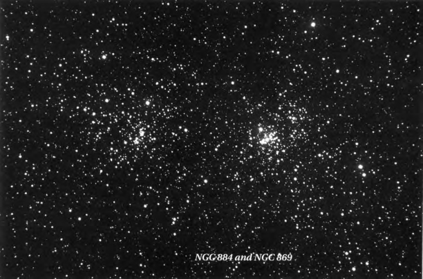
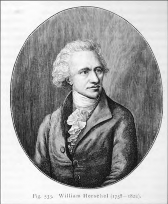
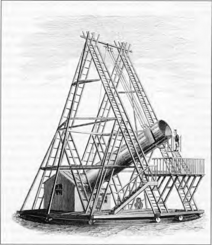
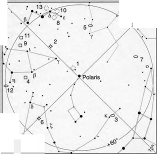
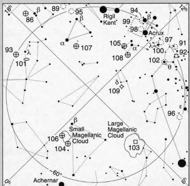
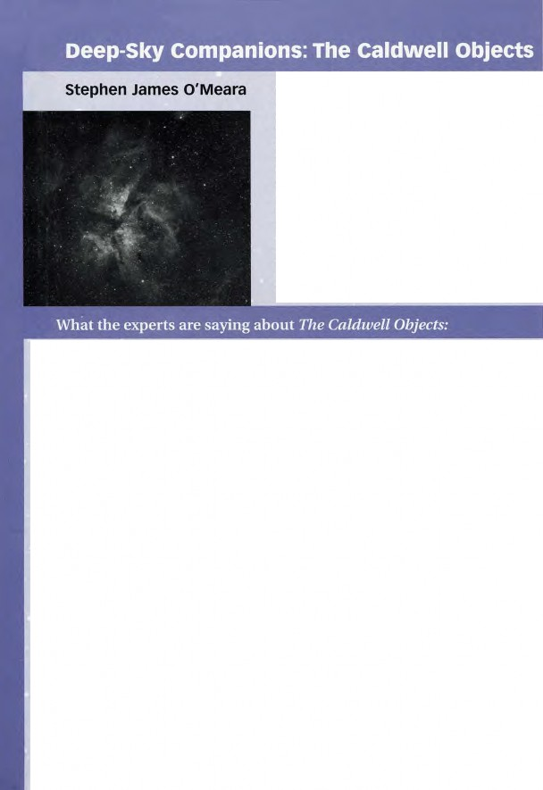

parent/ About This Book 1 The Caldwell Objects 19 Twenty Spectacular Non-Caldwell Objects 430 Appendix
The Caldwell Catalog
|
C |
Name |
Type |
Con. |
R.A. |
Dec. |
Mag. |
Size ( ‘ ) |
Notes |
Page |
|
1 |
NGC 188 |
OC |
Cep |
00h 48m |
+85° 14' |
8.1 |
15 |
|
19 |
|
2 |
NGC 40 |
PN |
Cep |
00h 13.0m |
+72° 31' |
12.3 |
0.6 |
Bow-Tie Nebula |
22 |
|
3 |
NGC 4236 |
SG |
Dra |
12h 16.7m |
+69° 28' |
9.6 |
2 0 x 8 |
|
24 |
|
4 |
NGC 7023 |
BN |
Cep |
21h 01.6m |
+68° 10' |
7.7 |
1 0 x 8 |
reflection nebula |
27 |
|
5 |
IC 342 |
SG |
Cam |
03h 46.8m |
+68° 06' |
8.4 |
16 |
|
30 |
|
6 |
NGC 6543 |
PN |
Dra |
17h 58.6m |
+66° 38' |
8.1 |
0.4 x 0.3 |
Cat's Eye Nebula |
33 |
|
7 |
NGC 2403 |
SG |
Cam |
07h 36.9m |
+65° 36' |
8.4 |
24 x 13 |
|
37 |
|
8 |
NGC 559 |
OC |
Cas |
01h 29.5m |
+63° 18' |
9.5 |
7.0 |
Ghost's Goblet |
41 |
|
9 |
Sh2-155 |
BN |
Cep |
22h 56.8m |
+62° 37' |
10.0 |
5 0 x 3 0 |
Cave Nebula |
44 |
|
10 |
NGC 663 |
OC |
Cas |
01h 46.3m |
+61° 13' |
7.1 |
15 |
Horseshoe Cluster |
49 |
|
11 |
NGC 7635 |
BN |
Cas |
23h 20.7m |
+61° 12' |
10.0 |
1 5 x 8 |
Bubble Nebula |
52 |
|
12 |
NGC 6946 |
SG |
Cep |
20h 34.9m |
+60° 09' |
8.8 |
1 1 x 9 |
|
55 |
|
13 |
NGC 457 |
OC |
Cas |
01h 19.5m |
+58° 17' |
6.4 |
20 |
E.T. Cluster |
58 |
|
14 |
NGC |
OC |
Per |
02h 20.5m |
+57° 08' |
5/6 |
18/18 |
Double Cluster |
62 |
|
15 |
NGC 6826 |
PN |
Cyg |
19h 44.8m |
+50° 31' |
8.8 |
0.5 x 0.4 |
Blinking Planetary |
68 |
|
16 |
NGC 7243 |
OC |
Lac |
22h 15.0m |
+49° 54' |
6.4 |
30 |
|
72 |
|
17 |
NGC 147 |
EG |
Cas |
00h 33.2m |
+48° 30' |
9.5 |
18x11 |
M31 companion |
75 |
|
18 |
NGC 185 |
EG |
Cas |
00h 39.0m |
+48° 20' |
9.2 |
1 7 x 1 4 |
M31 companion |
75 |
|
19 |
IC5146 |
BN |
Cyg |
21h 53.4m |
+47° 16' |
9.3 |
10 |
Cocoon Nebula |
79 |
|
20 |
NGC 7000 |
BN |
Cyg |
20h 58.8m |
+44° 20' |
5.0 |
100 x 60 |
No. America Neb. |
83 |
|
21 |
NGC 4449 |
IG |
CVn |
12h 28.2m |
+44° 06' |
9.6 |
5 x 4 |
Box Galaxy |
89 |
|
22 |
NGC 7662 |
PN |
And |
23h 25.9m |
+42° 32' |
8.3 |
0.5 |
Lt. Blue Snowball |
92 |
|
23 |
NGC 891 |
SG |
And |
02h 22.6m |
+42° 21' |
9.9 |
1 2 x 3 |
Outer Limits Gal. |
96 |
444
Deep-Sky Companions: The Caldwell Objects
|
C |
Name |
Type |
Con. |
R.A. |
Dec |
Mag. |
Size (') |
Notes |
Page |
|
24 |
NGC 1275 |
EG |
Per |
03h 19.8m |
+41° 31' |
11.9 |
3 x 2 |
Perseus A |
100 |
|
25 |
NGC 2419 |
GC |
Lyn |
07h 38.1m |
+38° 53' |
10.4 |
4.6 |
Intergalactic Tramp |
104 |
|
26 |
NGC 4244 |
SG |
CVn |
12h 17.5m |
+37° 48' |
10.4 |
1 6 x 2 |
Silver Needle Gal. |
107 |
|
27 |
NGC 6888 |
BN |
Cyg |
20h 12.0m |
+38° 21' |
8.8 |
18 x 13 |
Crescent Nebula |
109 |
|
28 |
NGC 752 |
OC |
And |
01h 57.6m |
+37° 50' |
5.7 |
75 |
|
112 |
|
29 |
NGC 5005 |
SG |
CVn |
13h 10.9m |
+37° 03' |
9.8 |
6 x 3 |
|
115 |
|
30 |
NGC 7331 |
SG |
Peg |
22h 37.lm |
+34° 25' |
9.5 |
9.7 x 4.5 |
|
118 |
|
31 |
IC 405 |
BN |
Aur |
05'1 16.2m |
+34° 16' |
9.2 |
3 0 x 2 0 |
Flaming Star Neb. |
122 |
|
32 |
NGC 4631 |
SG |
CVn |
12h 42.1m |
+32° 32' |
9.2 |
1 5 x 4 |
|
126 |
|
33 |
NGC 6992/5 |
SN |
Cyg |
20h 56.4m |
+31° 43' |
7.5 |
6 0 x 8 |
Eastern Veil Neb. |
129 |
|
34 |
NGC 6960 |
SN |
Cyg |
20h 45.7m |
+30° 43' |
7.9 |
7 0 x 6 |
Western Veil Neb. |
129 |
|
35 |
NGC 4889 |
EG |
Com |
13h 00.lm |
+27° 58' |
11.5 |
3 x 2 |
in Coma Cluster |
135 |
|
36 |
NGC 4559 |
SG |
Com |
12h 36.0m |
+27° 58' |
10.0 |
1 1 x 5 |
|
139 |
|
37 |
NGC 6885 |
OC |
Vul |
20h 11.6m |
+26° 28' |
8.1 |
20 |
|
143 |
|
38 |
NGC 4565 |
SG |
Com |
12h 36.3m |
+25° 59' |
9.6 |
1 6 x 2 |
|
150 |
|
39 |
NGC 2392 |
PN |
Gem |
07h 29.2m |
+20° 55' |
9.2 |
0.8 x 0.7 |
Eskimo Nebula |
154 |
|
40 |
NGC 3626 |
SG |
Leo |
l l h 20.1m |
+18° 21' |
11.0 |
3 x 2 |
|
159 |
|
41 |
Mel 25 |
OC |
Tau |
04h 26.9m |
+ 15° 52' |
0.5 |
330 |
Hyades |
162 |
|
42 |
NGC 7006 |
GC |
Del |
21h 01.5m |
+ 16° 11' |
10.6 |
3.6 |
|
169 |
|
43 |
NGC 7814 |
SG |
Peg |
00h 03.2m |
+ 16° 09' |
10.6 |
6 x 2 |
Electric Arc |
173 |
|
44 |
NGC 7479 |
SG |
Peg |
23h 05.0m |
+12° 19' |
10.8 |
4 x 3 |
|
173 |
|
45 |
NGC 5248 |
SG |
Boo |
13h 37.5m |
+08° 53' |
10.3 |
6 x 5 |
|
179 |
|
46 |
NGC 2261 |
BN ! |
Mon |
06h 39.2m |
+08° 44' |
~10var. |
4 x 2 |
Hubble'sVar. Neb. |
182 |
Appendix A 445
|
C |
Name |
Type |
Con. |
R.A. |
Dec |
Mag. |
Size (') |
Notes |
Page |
|
47 |
NGC 6934 |
GC |
Del |
20h 34.2m |
+07° 24' |
8.8 |
7.1 |
|
187 |
|
48 |
NGC 2775 |
SG |
Cnc |
09h 10.3m |
+07° 02' |
10.1 |
5 x 4 |
|
191 |
|
49 |
2237-8/46 |
BN |
Mon |
06h 32.3m |
+05° 03' |
-5.0 |
80x60 |
Rosette Nebula |
194 |
|
50 |
NGC 2244 |
OC |
Mon |
06h 32.3m |
+04° 51' |
4.8 |
30 |
assoc. w/Rosette |
194 |
|
51 |
IC1613 |
IG |
Cet |
01h 04.8m |
+02° 07' |
9.2 |
19x17 |
The Scarecrow |
202 |
|
52 |
NGC 4697 |
EG |
Vir |
12h 48.6m |
-05° 48' |
9.2 |
7 x 5 |
in Virgo Cluster |
207 |
|
53 |
NGC 3115 |
SG |
Sex |
10h 05.2m |
-07° 43' |
8.9 |
7 x 3 |
The Spindle |
211 |
|
54 |
NGC 2506 |
OC |
Mon |
08h 00.0m |
-10° 46' |
7.6 |
12 |
|
215 |
|
55 |
NGC 7009 |
PN |
Aqr |
21h 04.2m |
-11°22' |
8.0 |
0.7 x 0.4 |
Saturn Nebula |
218 |
|
56 |
NGC 246 |
PN |
Cet |
00h 47.lm |
-11° 52' |
10.9 |
5 x 4 |
Pac-Man Nebula |
223 |
|
57 |
NGC 6822 |
IG |
Sgr |
19h 44.9m |
-14° 48' |
8.8 |
15 |
Barnard's Galaxy |
227 |
|
58 |
NGC 2360 |
OC |
CMa |
07h 17.7m |
-15° 38' |
7.2 |
14 |
|
231 |
|
59 |
NGC 3242 |
PN |
Hya |
10h 24.8m |
-18° 39' |
7.8 |
0.8 x 0.6 |
Ghost of Jupiter |
234 |
|
60 |
NGC 4038 |
IG |
Crv |
12h 01.9m |
-18°52' |
10.5 |
1 1 x 6 |
Ringtail Gal. NW |
239 |
|
61 |
NGC 4039 |
IG |
Crv |
12h 01.9m |
-18°53' |
10.3 |
1 0 x 4 |
Ringtail Gal. SE |
239 |
|
62 |
NGC 247 |
SG |
Cet |
00h 47.1m |
-20° 46' |
9.2 |
2 2 x 7 |
Milkweed Seed Gal. |
245 |
|
63 |
NGC 7293 |
PN |
Aqr |
22h 29.6m |
-20° 50' |
7.3 |
12 x 10 |
Helix Nebula |
248 |
|
64 |
NGC 2362 |
OC |
CMa |
07h 18.7m |
-24° 57' |
4.1 |
6 |
Tau CMa Cluster |
254 |
|
65 |
NGC 253 |
SG |
Scl |
00h 47.6m |
-25° 17' |
7.6 |
2 6 x 6 |
Sculptor Galaxy |
258 |
|
66 |
NGC 5694 |
GC |
Hya |
14h 39.6m |
-26° 32' |
10.2 |
4.3 |
|
263 |
|
67 |
NGC 1097 |
SG |
For |
02h 46.3m |
-30° 16' |
9.2 |
1 0 x 6 |
|
266 |
|
68 |
NGC 6729 |
BN |
CrA |
19h 01.9m |
-36° 57' |
-9.5 |
1.3 var. |
R CrA Nebula |
270 |
|
69 |
NGC 6302 |
PN |
Sco |
17h 13.7m |
-37° 06' |
9.6 |
1.4 x 0.4 |
Bug Nebula |
274 |
446 Deep-Sky Companions: The Caldwell Objects
|
C |
Name |
Type |
Con. |
R.A. |
Dec |
Mag. |
Size (') |
Notes |
Page |
|
70 |
NGC 300 |
SG |
Scl |
00h 54.9m |
-37° 41' |
8.1 |
20 x 15 |
Southern Pinwheel |
277 |
|
71 |
NGC 2477 |
OC |
Pup |
07h 52.2m |
-38° 32' |
5.8 |
20 |
|
284 |
|
72 |
NGC 55 |
SG |
Scl |
00h 15.1m |
-39° 13' |
8.1 |
3 4 x 6 |
|
277 |
|
73 |
NGC 1851 |
GC |
Col |
05h 14. lm |
-40° 03' |
7.1 |
12 |
|
288 |
|
74 |
NGC 3132 |
PN |
Vel |
10h 07.0m |
-40° 26' |
9.4 |
1.4 x 0.9 |
So. Ring Neb. |
292 |
|
75 |
NGC 6124 |
OC |
Sco |
16h 25.3m |
-40° 40' |
5.8 |
40 |
|
296 |
|
76 |
NGC 6231 |
OC |
Sco |
16h 54.2m |
-41° 50' |
2.6 |
14 |
False Comet Cluster |
300 |
|
77 |
NGC 5128 |
EG |
Cen |
13h 25.5m |
-43° 01’ |
6.7 |
1 7 x 1 3 |
Centaurus A |
305 |
|
78 |
NGC 6541 |
GC |
CrA |
18h 08.0m |
-43° 43' |
6.3 |
15 |
|
311 |
|
79 |
NGC 3201 |
GC |
Vel |
10h 17.6m |
-46° 25' |
6.7 |
20 |
|
314 |
|
80 |
NGC 5139 |
GC |
Cen |
13h 26.8m |
-47° 29' |
3.7 |
55 |
Omega Centauri |
318 |
|
81 |
NGC 6352 |
GC |
Ara |
17h 25.5m |
-48° 25' |
8.0 |
7.1 |
|
324 |
|
82 |
NGC 6193 |
OC |
Ara |
16h 41.3m |
-48° 46' |
5.2 |
14 |
|
328 |
|
83 |
NGC 4945 |
SG |
Cen |
13h 05.4m |
-49° 28' |
8.8 |
1 9 x 4 |
Tweezers Galaxy |
332 |
|
84 |
NGC 5286 |
GC |
Cen |
13h 46.4m |
-51° 22' |
7.3 |
11 |
|
336 |
|
85 |
IC 2391 |
OC |
Vel |
08h 40.3m |
-52° 55' |
2.5 |
60 |
Omicron Vel CI. |
339 |
|
86 |
NGC 6397 |
GC |
Ara |
17h 40.7m |
-53° 40' |
5.7 |
31 |
|
342 |
|
87 |
NGC 1261 |
GC |
Hor |
03h 12.3m |
-55° 13' |
8.3 |
6.8 |
|
345 |
|
88 |
NGC 5823 |
OC |
Cir |
15h 05.4m |
-55° 36' |
7.9 |
12 |
|
348 |
|
89 |
NGC 6087 |
OC |
Nor |
16h 18.9m |
-57° 54' |
5.4 |
15 |
S Normae Cluster |
351 |
|
90 |
NGC 2867 |
PN |
Car |
09h 21.4m |
-58° 19' |
9.7 |
0.2 |
|
354 |
|
91 |
NGC 3532 |
OC |
Car |
11h 05.5m |
-58° 44' |
3.0 |
50 |
Pincushion Cluster |
358 |
|
92 |
NGC 3372 |
BN |
Car |
10h 43.8m |
-59° 52' |
4.8 var. |
120 var. |
Eta Carinae Nebula |
361 |
Appendix A 447
|
C |
Name |
Type |
Con. |
R.A. |
Dec |
Mag. |
Size (') |
Notes |
Page |
|
93 |
NGC 6752 |
GC |
Pav |
19h 10.9m |
-59° 59' |
5.4 |
29 |
Starfish Cluster |
370 |
|
94 |
NGC 4755 |
OC |
Cm |
12h 53.6m |
-60° 21' |
4.2 |
10 |
Jewel Box |
376 |
|
95 |
NGC 6025 |
OC |
TrA |
16h 03.3m |
-60° 25' |
5.1 |
15 |
|
381 |
|
96 |
NGC 2516 |
OC |
Car |
07h 58.0m |
-60° 45' |
3.8 |
22 |
Southern Beehive |
384 |
|
97 |
NGC 3766 |
OC |
Cen |
l l h 36.2m |
-61° 37' |
5.3 |
15 |
|
388 |
|
98 |
NGC 4609 |
OC |
Cru |
12h 42.3m |
-63° 00' |
6.9 |
6.0 |
in Coalsack |
391 |
|
99 |
— |
DN |
Cm |
12h 53m |
-63° |
— |
420 x 300 |
Coalsack |
391 |
|
100 |
Cr249 |
OC |
Cen |
l l h 38.3m |
-63° 22' |
2.9 |
6 5 x 4 0 |
Lambda Cen CI. |
397 |
|
101 |
NGC 6744 |
SG |
Pav |
19h 09.7m |
-63° 51' |
8.6 |
2 1 x 1 3 |
|
371 |
|
102 |
IC 2602 |
OC |
Car |
10h 42.9m |
-64° 24' |
1.9 |
100 |
Theta Car CI. |
402 |
|
103 |
NGC 2070 |
BN |
Dor |
05h 38.6m |
-69° 05' |
~4.0 |
3 0 x 2 0 |
Tarantula Neb. |
405 |
|
104 |
NGC 362 |
GC |
Tuc |
01h 03.2m |
-70° 51' |
6.4 |
14 |
|
409 |
|
105 |
NGC 4833 |
GC |
Mus |
12h 59.6m |
-70° 52' |
6.9 |
|
Southern Butterfly |
417 |
|
106 |
NGC 104 |
GC |
Tuc |
00h 24. lm |
-72° 05' |
4.0 |
50 |
47 Tucanae |
409 |
|
107 |
NGC 6101 |
GC |
Aps |
16h 25.8m |
-72° 12' |
9.2 |
11 |
|
423 |
|
108 |
NGC 4372 |
GC |
Mus |
12h 25.8m |
-72° 40' |
7.2 |
19 |
|
417 |
|
109 |
NGC 3195 |
PN |
Cha |
10h 09.4m |
-80° 52' |
11.6 |
0.6 |
|
426 |
Key:
BN = bright nebula DN = dark nebula
PN = planetary nebula SN = supernova remnant OC = open cluster
GC = globular cluster EG = elliptical galaxy SG = spiral galaxy
IG = irregular galaxy
448 Deep-Sky Companions: The Caldwell Objects
Appendix B Why Messier Did
Not include the Double Cluster

ONE MYSTERY THAT STILL HAUNTS THE HALLS of
astronomy is why the 18th-century French comet hunter Charles Messier did not include the Double Cluster in his famous catalog. "This splendid object. . . was certainly known in his day," Robert Burnham Jr. comments in his Celestial Handbook, "and he included other bright clusters such as Praesepe and the Pleiades." So why not the Double Cluster?
I believe Messier had a very logical reason to omit it. But first a powerful myth must be dispelled.
The Messier Catalog is not a list of the best or the brightest deep-sky objects in the heavens. This cannot be said enough. It is not a
manifest of celestial superlatives. But who hasn't loosely described the Messier objects as the finest in the heavens? On the jacket of The Messier Album, by John H. Mallas and Evered Kreimer, no less an authority than Harvard University astronomer Owen Gingerich encourages readers to "find a telescope and a clear night, and . . . begin the chase of the most spectacular sidereal objects of the northern skies" (emphasis mine).
Without question, the Messier Catalog con- tains some of the most spectacular deep-sky objects visible in small telescopes. But their inclusion in the catalog is largely circumstantial. Messier never intended to create a list of
Appendix Β 449
the most visually pleasing objects in the heavens. His was a catalog of "comet masquer-aders," as the late comet discoverer Leslie Peltier called them. Messier started his list in 1758, after he encountered a stationary fuzzy patch (Ml) near Zeta (ζ) Tauri while looking for the Comet of 1758. As comet hunter David Levy writes in the first chapter of Deep-Sky Companions: The Messier Objects, "Realizing he had been fooled by the sky's version of a practical joke, Messier began to build a catalogue of what he called these 'embarrassing objects.'"
Messier's first catalog, published in 1774, contained not 110 but 45 "embarrassing" objects. Actually, his original list, compiled in 1765, had only 41 objects. "Before submitting the list for publication," Levy explains, "he decided to round it out with a few more objects." In order of their inclusion, these are the two components of the Orion Nebula (M42 and M43), the Beehive Cluster (M44) in Cancer, and the Pleiades star cluster (M45) in Taurus. But why not the Double Cluster?
To understand Messier's intent, we have to forget what we now know about the nature of the objects in his list, forget how spectacular these objects look in photographs and CCD images. Instead, we have to journey back in time some two and a half centuries and think like Messier, who was a comet hunter, not a celestial tourist.
Like Messier, I have spent several years hunting for comets. Unlike Messier, I have never discovered one that was not already known. But I have had the privilege to meet many "embarrassing objects." Identifying them has been relatively easy for me because most are plotted on the star charts I use in the field. Messier and his contemporaries did not have the luxury of star charts with reams of nebulae plotted on them. And nothing is more unpro- ductive to a comet hunter than sitting behind
450
an eyepiece, waiting to see if an uncharted object will move; the agony increases as twilight advances, or as the object nears the western horizon. Understandably, then, Messier wanted to "cage" these celestial pests, once and for all, by cataloging their positions.
When Messier systematically began search- ing for comets in 1758 competition was scarce. "For about 15 years nearly all comet discoveries were made by Messier," Gingerich writes in The Messier Album, "so that he almost considered them his own property." These comets were not the dim and distant objects that (mostly professional) astronomers are accustomed to discovering today (mostly on films or CCD images, well before amateurs have a chance to spy the comets in their eyepieces). In Messier's day all comets were swept up visually, and all were bright and relatively near the Sun. Of the 15 comets discovered from 1758 to 1774 (when his first catalog was published), 7 were discovered by Messier (and he independently found one other first discovered in 1759 by observers in Lisbon); seven were discovered with the unaided eye; and more than half were sighted within two weeks of perihelion (each comet's closest approach to the Sun). No comets were found more than about 2 months before or after perihelion, and the faintest ones shone near the limit of naked-eye visibility at magnitude 6.5. These statistics provide us with some valuable insight into where Messier and other comet hunters concentrated their searches.
It has long been known that to maximize
their chances of discovery, comet hunters search a "haystack" of sky centered on the ecliptic, near the position of sunset or sunrise. In the Guide to Observing Comets (edited by Daniel W. E. Green and published as a special issue of the International Comet Quarterly), veteran comet observer John Bortle explains how these searches are conducted:
Deep-Sky Companions: The Caldwell Objects
A typical pattern for evening hunting is to begin in late twilight by choosing a point near the horizon and about 45° north or south of the sunset point and sweeping parallel to the horizon until reaching an azimuthal point around 45° on the other side of the sun…. After completing the first sweep, the instrument is raised about one-third to one-half of a field diameter and the observer proceeds to sweep backward to the original starting point. This procedure should be continued until one reaches at least 45° altitude above the horizon.
The search pattern is reversed when scanning the morning sky.
Of the 41 deep-sky objects in Messier's orig- inal list, 17 clearly were discovered first by Messier; and of the 109 objects in the final catalog only 37 were Messier discoveries. Just as we might expect from a comet hunter, all of his original finds were within 45° of the point where the ecliptic met the horizon at the time of discovery. In fact, all but one (M40) of the first 41 objects lies reasonably within that limit; 60 percent of them were within about 25° of that point. Since it was Messier's intent to catalog as many of these "embarrassing" objects as possible, he thoroughly searched the literature on previously reported nebulae and, after observing and obtaining accurate positions for them, added these objects to his list. Messier did not care whether these objects were his discoveries, because they were not comets. He meticulously acknowledged each discoverer in his catalog. In fact, he was probably quite happy to do so — their discoveries only benefited him.
One question immediately surfaces, however: why did Messier include in his catalog the bright and obvious objects M31 in Andromeda, M6 and M7 in Scorpius, and M8 in Sagittarius? All were well known at the time, some since
antiquity. The answer would be obvious to an 18th-century comet hunter. All of these objects lie in the comet "haystack" at various times of the year, and all look nebulous to the naked eye. Obviously, no intelligent observer would con- fuse, say, M31, for a comet when it was in the dark of the sky, but what about in a twilight sky?
In Messier's day, twilight comets were not infrequent. The first and only comet discovered in 1758 (when Messier started looking), was sighted from Bourbon Island in the Indian Ocean just 15 days before perihelion; the comet shone at magnitude 2.5 and had a 1.5°-long tail. Messier's fourth comet was sighted (on March 8, 1766) in the twilight; the 6th-magnitude comet, which was approaching conjunction with the Sun, never escaped the twilight and was last seen by Messier with difficulty low over the horizon. On October 13, 1773, one year before Messier's first list was published, Messier discovered another twilight comet; this one shone at magnitude 4.5, about the same brightness as both M6 and M8. In 1780 Messier would find yet another twilight comet, a telescopic 7th-magnitude one. So it was not only reasonable but also prudent that Messier include in his catalog the positions of all cometlike objects, however bright, as long as they were in the comet haystack.
It's easy to imagine how the compact glows
of M6, M7, or M8 could be confused as comets when hiding in the twilight, many would agree, but M31? Interestingly, in the last 20 years, I know of two cases where respected comet hunters have reported the discovery of a binocular comet in the twilight sky only to be "embarrassed" when they learned that they had simply rediscovered M31. Of course, the small cometlike form of M32 is almost sitting on top of M31; how strange it would have been for Messier to include M32 in a catalog of pseudocomets while neglecting the conspicuous,
Appendix Β 451
elongated mass beside it.
As noted above, of the remaining objects in Messier's first list of 41 noncometary objects, all but one (the double star M40) lie within the magical comet haystack at various times of the year. But even M40 appears to be an explainable exception. After searching through the lists of previously reported nebulae to make his list as complete as possible, Messier set out to locate each of these objects, some of which he could not find. "He therefore published as part of his memoir," Gingerich writes, "a number of objects previously reported, but which he could not find. He realized that many of them were nebulous to the naked eye but were mere asterisms when examined with a telescope." This left Messier with a list of 39 cometlike objects. Given Messier's penchant for rounding out his lists, he included in his "final" listing of 1764 the "nebula" that had fooled not him, but Johannes Hevelius in 1660 (namely, M40). The "nebula," as Messier pointed out, is merely "two stars very close to one another and very faint." As many comet hunters today know, close pairs of stars seen at low magnifi- cations can look remarkably like dim comets. Messier's choice to include M40 was not only logical but educational — a warning, if you will, to comet hunters that there are things other than nebulae and star clusters that can masquerade as comets.
In January 1765, just as Messier had finished
rounding out his list, he discovered, by chance (not in the course of a systematic comet search) a cluster of stars (M41) just south of brilliant Sirius. And that is why, four years later, he decided once again to round off his list. The inclusion of M42 seems logical because of M43, the small nebula north of M42 that has a round cometlike head, starlike nucleus, and "tail" of nebulosity. Both the Praesepe and the Pleiades star clusters lie near-
ly on the ecliptic. Although they would not nec- essarily be problematical to telescopic comet hunters (being bright and easily resolvable into stars), they still might confuse someone looking in the comet haystack with the unaided eye in the twilight.
The Double Cluster, then, is the only celestial object visible from Messier's latitude and known since classical times that is not included in the comet hunter's original list of 45 objects. The remaining 65 objects in Messier's final catalog are not part of the mystery." [The] first group of [45] nebulae was the only part of the catalogue prepared for its own sake," Gingerich explains; "most of the subsequent objects were found and reported in comet searches, so that the remainder of the catalogue is less systematic than the first part."
So why not include the Double Cluster? From Messier's latitude of nearly 50° N, the Double Cluster never sets. Even at lower culmi- nation it would still be almost 20° above Messier's northern horizon. Its far northerly declination of nearly +60° places it well outside of the comet haystack during most of the year. Only in the late spring and early fall does it lie on the far northern fringe of the comet haystack. Furthermore, in the twilight, not only is the Double Cluster obviously a pair of close objects (a dead giveaway), its appearance coincides with that of Cassiopeia's brightest stars. Even in the unlikely event that Messier were to spot its glow in the early evening twilight, by nightfall he certainly would have recognized it. Nor is the Double Cluster a problem when it lies close to the comet haystack in the morning sky. Predawn comet searches begin before the onset of twilight. The observer starts by looking 45° above the horizon and works his way toward the Sun. Since the Double Cluster is cir-cumpolar, its presence and identity would be obvious in a dark sky. Furthermore, as the
452 Deep-Sky Companions: The Caldwell Objects
Earth turns, the cluster would climb ever higher in the sky, well away from the comet haystack. Meanwhile the comet hunter's sweeps would take him (or her; Caroline Herschel was a near- contemporary of Messier) lower and lower as he (or she) searched for brighter and brighter comets near the Sun. So only someone who did not know the sky or was unskilled in the comet-hunting trade would have been fooled by this bright circumpolar glow; it would be folly to list the Double Cluster as an
object that could be mistaken for a comet by a skilled observer. And though Messier's sky- sweeping technique is not known with certainty, Peter Lancaster Brown, in his book Comets, Meteorites, and Men, writes that "from sketchy accounts [Messier] left, there is no reason to suppose that it differed much from those in use by present generation amateur-visual observers dedicated to making a persistent search of the skies night after night, month after month and year after year."
Appendix Β 453
William Herschel:

The Greatest Visual Observer of All Time
Based on The Scientific Papers of Sir William Herschel (London: The Royal Society and the Royal Astronomical Society, 1912).
Larry Mitchell
AM O N G T H E A S T R O N O M I C A L L U M -
inaries of the 18th century, none shone as brightly as William Herschel (1738-1822). His contributions to astronomy were unrivaled in his day, and they greatly expanded humanity's perception of the universe. Herschel was passionately devoted to astronomy. He tirelessly pursued his endeavors both day and night, often becoming thoroughly consumed with each project. He had to engineer,
and then build, the great instruments he used at night — often all night. Such devotion is almost unheard of today. Yet Herschel pursued his passion in this way for about 40 years.
The Caldwell Catalog is replete with Her- schelian discoveries, which is not surprising. After Charles Messier (1730-1817) published his famous catalog of comet masqueraders, Herschel undertook the first systematic visual survey of the night sky with a large-aperture telescope, discovering 2,508 additional deep-sky objects. Herschel, however, was much more than a deep- sky devotee. He was a prolific observer of everything in the heavens. Indeed, his views of deep-sky objects were influenced in part by his observations of the stars and planets, as well as his belief in the plurality of worlds.
454
B E GI N NI N GS AN D F AM I L Y
FriedrichWilhelm (later William) Herschel was born on November 15, 1738, in Hanover, Ger- many. He was one of 10 children born to Isaac and Anna and is said to have inherited his energy and perseverance from his father, a musician in the Hanoverian Guard. William followed in his father's footsteps, though not necessarily by choice. When he was four his father sat him on a table and commanded him to play the fiddle. By his late teens William was an excellent musician and eminent composer, and in 1756 he toured England for several months with his father and the Guard. The country and culture left a lasting impression on the young composer, and in the autumn of 1757 William left Germany for England, where he lived for the rest of his life.
Deep-Sky Companions: The Caldwell Objects
Initially Herschel made his living in England by performing and copying music. In 1766 he became the organist at the Octagon Chapel in Bath and, within a few years, was promoted to Director of Public Concerts. But behind this veneer of musical aptitude lay a keen interest in scientific and mathematical studies, which magnified after his equally talented and devoted sister Caroline joined him in Bath in 1772. In time Caroline gave up her own musical interests to support her brother's growing passion for science, not only because William wished it, but because she knew she would be indispensable to him. Her own devotion would win her praise from astronomers and other scientists. She became an astute telescope maker and observer in her own right, as well as the discoverer of seven comets and several deep-sky objects. She also produced a revised version of Flamsteed's star catalog. Caroline Herschel was awarded the Gold Medal of the Royal Astronomical Society in 1828 for carefully and thoroughly cataloging 2,500 of the nebulae and clusters found by her brother.
On May 8,1788, at the age of 50, Herschel
married Mary Pitt, a wealthy widow and daugh- ter of Mr. Adee Balwin, a merchant. She brought him financial security that alleviated him of the necessity of building telescopes to supplement his income. Her friendly disposition and gentle character made Herschel's home life thoroughly happy, and she did not distract him from his work. Equally important, if not more so, she and Caroline became the best of friends. William and Mary's only child, John Frederick William Herschel, became a renowned scientist and astronomer who extended his father's studies to the southern celestial hemisphere.
T H E T U R N I N G P O I N T
Herschel penned his earliest known astronomical note on May 10, 1773: "Bought a book of
astronomy and one of astronomical tables." He had begun to read about astronomy that spring, and the subject was to consume him from that point on. During the day, Herschel would study Newton's works; at night he would retire to bed with a glass of milk or water and read Smith's Optics or Ferguson's Astronomy. These books turned his life around, for they aroused in him a passionate desire to see the wonders in the heavens for himself.
After fussing with lenses, tin tubes, and tools for making refracting telescopes, he quickly turned his interest to reflectors. His first purchase, a Gregorian reflector with a focal length of 2 feet, was so convenient to use that he decided to build his own — though he knew nothing about telescope making. Come October, Herschel had some mirrors cast for a 2-foot focal- length reflector. These were made of metal alloys called speculum, which contained copper and tin and "produced a very good sound white metal." By March 1774, the young telescope maker had turned a 5.5-foot focal-length reflector to the sky. His first astronomical journal entry, dated March 1 , 1774, describes observations of Saturn at 40x, then of the "Lucid Spot" (M42) in Orion's Sword. This marked the modest beginning to his exceptional astronomical career.
In the summer of 1774 William and Caroline
moved to 19 New King Street, also in Bath. The house had more room for telescope building, a roof for observing, and a grass plot that could support a large telescope. Soon, Caroline noted, the house was turned upside down as William churned out numerous mountings and mirrors with focal lengths as large as 20 feet. By January 1781 William had developed a good case of aperture fever. He built a furnace and melting oven on the ground floor of his house, which he used in August of that year to cast a speculum- metal mirror with a focal length of
Appendix C 455
30 feet. The mirror weighed 469 pounds and had to be lifted by a crane. It cracked while cooling. Herschel recast the mirror, which now weighed 538 pounds, but this time the metal fell through the bottom of the furnace, damaging the floor and causing the Herschels to run for cover. At the end of this episode, Caroline later wrote, her "poor brother fell, exhausted with heat and exertion, on a heap of brickbats."
A NE W W O RL D
Between these mirror-making escapades, Herschel made his greatest discovery, that of the planet Uranus. He found it on Tuesday, March 13, 1781, from the backyard of his new residence at Bath. The discovery was no accident. That night Herschel was using a telescope (with a focal length of 7 feet, an aperture of 6.2 inches, and a magnification of 227x) to systematically study, for the purpose of registering double stars, all stars brighter than 8th magnitude, when he recorded a new object in his journal:
In the quartile near ζ Tauri the lowest of two is a curious either nebulous star or perhaps a comet. A small star follows the comet at ⅔ of the fields distance.
After verifying that the "comet" had moved, Herschel notified the Astronomer Royal, Nevil Maskelyne, at Greenwich, who first suggested that the object might be a new planet. He also contacted his fellow astronomer and correspon- dent, Rev. T. Hornsby at Oxford. Subsequent observations proved that Herschel had indeed become the first person in history to discover a planet beyond those visible to the naked eye, and this granted him immediate and lasting fame. In November 1781 he was awarded the Royal Society's Copley Medal for the discovery.
In response to a request by Maskelyne the following year, Herschel named his new object
456
Georgium Sidus (the star of George) after his king and mentor, King George III. "I cannot but wish to take this opportunity of expressing my sense of gratitude," Hershel wrote, "by giving the name Georgium Sidus to a star, which with respect to us first began to shine under his auspicious reign." (The name Uranus, proposed by Johann Elert Bode, was not universally accepted until after Herschel's death). Herschel's request did not go unnoticed by the king, who suggested that Herschel concentrate on astronomy full time. To this end, he granted Herschel an annual stipend of £200 (not a large sum), in exchange for which the astronomer was to occasionally show members of the royal family something of interest in the sky.
Herschel's career as a professional astron-
omer commenced in August of 1782. To fulfill his duties to the king, Herschel (with Caroline) moved to a house in Datchet, about one and a half miles from Windsor Castle, on the left bank of the Thames. It had a convenient garden, in which he placed a "small 20-foot reflector of 12 inches aperture." By 1783, Herschel had built a "large 20 feet" (focal length) telescope with an aperture of 18.7 inches, and he began observing the heavens with it on October 23rd of that year. All of his "sweeps" were made with this instrument, as were most of his other important observations.
Upon completing the large 20-foot telescope, Herschel did not miss a single hour of "Star-Light weather from which I used either to watch myself or to keep somebody to watch. My leisure hours of the day were spent in preparing and improving telescopes." Herschel was to build numerous telescopes for sale as well as for his own use.
S W E E P I NG TH E H E A V E NS
Five days after he deployed his large 20-foot reflector, Herschel began a systematic sweep
Deep-Sky Companions: The Caldwell Objects
of the heavens with it. For his sweeps he usually used a magnification of 157x, which offered a small 15' field of view. The eyepiece was mounted on the upper side of the telescope's octagonal tube, where it made a 45° angle with the vertical when the telescope was horizontal. Herschel preferred this observing position, looking down as if at a reading desk, and used this arrangement until September 22, 1786, in Sweep 600, when he changed to the "front view," as he called it. By removing the small diagonal mirror and placing the eyepiece at the front end of the tube, he found the images to be just as good and well defined as at the Newtonian focus and the light "incomparably more brilliant." He found this position very convenient.
Before starting a sweep, Herschel pointed the
telescope toward the meridian and observed from a 9-foot-long movable gallery. The telescope hung freely in the center of its mount, and the observer moved it with a handle fastened near the eyepiece. Drawing the telescope along by hand in a lateral motion, Herschel would walk backward and forward on the movable gallery. This enabled him to perform slow oscillations, 12° to 14° in breadth, each taking generally 4 to 5 minutes. At the end of each oscillation he took short notes on what he had seen. If he had found a new nebula or star cluster, he carefully noted the stars in the field of view of both the finderscope and the main telescope, so as to be able to locate the object again. After this procedure, Herschel would then raise or lower the instrument about 8' or 10' along a north-south line and then perform another oscillation. He then continued for 10, 20, or 30 oscillations according to circumstances, and the whole sweep was numbered and registered in his journal.
At first, Herschel took his own notes, but
after 41 sweeps the disadvantages of doing so
became obvious. Because he needed light to write, his eye could never achieve the dark adaptation required for his "delicate observa- tions." Furthermore, the gallery was not well placed, and holding down the heavy telescope at the ends of the oscillations, when it tended to arch upward, led him to become fatigued. Herschel therefore began to sweep by elevating and lowering the telescope manually with a vertical motion. This method increased the labor of moving the telescope, so he hired workmen to do the job. Caroline wrote down his observations, repeating everything back to him so he could verify the "picture before me" while preserving his night vision. A few sweeps (numbers 42 to 45) were made experimentally, and with Sweep 46 on December 18, 1783, Herschel's long survey of the heavens commenced. This series was not closed until September 30,1802, with Sweep No. 1112.
Each object's description and position rel-
ative to the nearest Flamsteed star was copied on single sheets of Foolscap (the "Register Sheets"). A great deal of effort was made to obtain accurate coordinates, and Herschel experimented with various techniques, using pulleys, knotted ropes, bells, and iron plates to tell him where he was in the heavens. Eventually there was a total of 2,508 new objects. Caroline also had a similar set of sheets for Messier's nebulae and clusters. She was very careful and accurate and made only two or three positional mistakes of Γ in all of her entries — and these she made in old age. A total of seven "Sweep Books" was eventually presented to the Royal Society.
THE 40 - FOOT MONSTER
In 1785 Herschel petitioned the king for a large instrument with a 30- or 40-foot focal length. The king chose the 40-foot option and granted £2,000 toward its construction, and in Sep-
Appendix C 457
tember work commenced. The king also granted a yearly salary of £50 to Caroline Herschel. However, frequent flooding at Datchet and consequent ill health slowed William's progress. Thus he and his sister moved in 1786 to a house at Slough, also in the neighborhood of Windsor Castle. There William's health improved.
The telescope, its massive mount, and its mirror all were designed exclusively by William Herschel. The first of its two functioning mirrors was cast in London; it spanned 49½ inches in diameter and was 2½ inches thick. Ten men polished it, giving the speculum "[a] very white surface." The mirror was very brittle, however, and came out of the mold thinner than intended. The resulting weakness would never permit it to give a good image, and the
mirror eventually was discarded. However, first light for the 40- foot telescope was achieved with this mirror on February 19,1787, when Herschel crawled inside the tube and hand-held the eyepiece to find the focal point. The view of the "Lucid Spot" in Orion was far from perfect, but it was better than expected and extremely bright. The Herschels immediately began trying to refine the mirror.

In August 1787, King George granted Herschel yet another
£2,000. A second mirror cracked during the casting process, but in February 1788 a third mirror was cast successfully. This mirror weighed 2,118 pounds, had a diameter of 48 inches, and was 3½ inches thick throughout (its back was not flat). An iron ring surrounded the mirror,
and an iron cross supported it from behind. The mirror was successfully pol- ished by machine.
The telescope's optical tube was 39 feet, 4 inches long, with a diameter of 4 feet, 10 inches.
Herschel did not deem the Great Telescope completed until August 28, 1789 — the same night he discovered the sixth satellite of Saturn (Enceladus) with it. (This actually proved to be a rediscovery, as Herschel had observed the satellite two years earlier with the 20-foot telescope but did not recognize it as such at the time.) Herschel observed with the 40-foot at the "front view," from an enclosed, adjustable seat that was mounted on the lower side of the tube's front end. No secondary mirror was used. The primary mirror's focal point was placed 4 inches above the lower side of the
458
Deep-Sky Companions: The Caldwell Objects
tube's front end. This meant that the observer's head would not block incoming light. A "slider" with an adjustable base was located at the lower end of the tube, where it pointed directly at the center of the great mirror. It carried a brass tube, into which eyepieces or micrometers were inserted.
Due to its massive size, Herschel seldom used the great telescope, even though it was his most celebrated instrument (and, at the time, the world's largest). The telescope required much time to ready for use and two workmen to move. Because of its weight, the mirror had to be left inside the telescope, so it tarnished quickly. (By contrast, Herschel's two 18¾-inch mirrors remained highly polished, as they were stored in protective boxes and placed in their telescope tube only when observations were about to be made.) Herschel used the 40-foot reflector sparingly and wrote that it should be used only to examine objects that other instruments could not reach.
Interestingly, Herschel never reported seeing
spiral structure in any "nebula" through the 40- foot telescope, even though such structure should have been obvious in some galaxies with so large an instrument. Equally strange is that Herschel did not distinctly mention the fifth or sixth stars of the Trapezium in M42, an object that he observed repeatedly. On one occasion the gigantic telescope even failed to show Saturn's rings. Obviously it gave poor images, even with its second mirror.
T H E M O O N AND P L A NE T S
Like many of his contemporaries, Herschel observed the Moon and, among other tasks, he carefully measured shadows cast upon its surface by its mountains. He deduced a lunar diameter of 2,180 miles, surprisingly close to today's more accurate figure (2,160 miles), but he also made some very controversial lunar
observations. On May 28, 1776, he used a 10-foot reflector at 240x to view what he believed were forests in Mare Humorum, complete with shadows cast by trees at the edge of the woods. The next night he could not see any "woods" and seemed to have dropped the idea completely. However, in a 1780 letter to Maskelyne he wrote of his absolute certainty of the Moon being inhabited, and if given the chance, Herschel vowed,
I would not hesitate a moment to fix upon the Moon for my habitation. What a glorious view of the heavens from the Moon. Do not all the elements seem at war when we compare the Earth with the Moon? Air, water, fire, clouds, tempests, volcanoes; all these are either not on the Moon or at least in much greater subjection than here.
In 1783 and again in 1787, Herschel reported a volcano in the Earthlit part of the new Moon, in the crater Aristarchus, stating that it resembled a red 4th-magnitude star. However, other astronomers in Paris thought that the Aristarchus region, which was relatively bright, might well have produced this volcano-like apparition by reflecting earthshine. Herschel may have been persuaded of this also, as the whole issue was quietly dropped.
Herschel's observations of Mars include many references to "luminous spots" (ice caps) that appeared to project beyond the edge of the planet's disk. He deduced that the polar spots were frozen, covered with mountains of ice and snow that melted only partway when alternately exposed to the Sun. He also noted dark spots on the surface and determined a rotation period of 24h 37m 26.3s — close to recent values. And he was aware that Mars had an atmosphere, noting an observation by Cassini that "a star in the water of Aquarius, at the distance of six minutes from the disk of
Appendix C 459
Mars, became so faint before its occultation, that it could not be seen by the naked eye, nor with a 3-feet telescope." To Herschel, Cassini's observation indicated that Mars had "a con- siderable but moderate atmosphere" and "its inhabitants probably enjoy a situation in many respects similar to ours."
Herschel's observations of Jupiter were focused mainly on the Galilean satellites. He noted considerable changes in their brightnesses and correctly reasoned that they have unequally tinted regions. As the moons rotated, he suspected, they would not present us with a constant quantity of reflected light. He wrote that "the satellites have a rotatory motion upon their axes, of the same duration with their periodical revolutions about the primary planet." He was correct.
Saturn particularly interested Herschel, and he was known to follow it continuously for up to six hours at a time. This dedication led to his discoveries of the two Saturnian satellites mentioned previously. He also observed that the Encke Division upon the A ring is not in the middle of that ring's breadth, and noted:
That this black belt is not the shadow of a chain of mountains [which some astronomers believed] may be gathered from its being visible all around on the ring. It is evident that this black zone is contained between two concentric circles.
When Saturn's rings turned edgewise, Herschel correctly noted that they were thinner than the disks of its satellites. He surmised that the planet's poles were flattened, like those of Jupiter, and that its atmosphere was dense. He also determined the ringed planet's rotation rate and noted that its rings rotated as well.
On January 11, 1787, Herschel continued his observations of "Georgium Sidus," noting the position of some very faint stars near the
460
planet. On the next night, two of those "stars" were missing. By February 5th, after a half dozen more observations, he knew he had discovered a new satellite of the planet. Before making the announcement, however, he wanted to see it move. So, on the evening of February 7th he kept the satellite in view for a total of nine hours, watching "this planet faithfully attend its primary planet." Herschel called this new satellite Oberon. During these studies he also discovered a second satellite, which he called Titania.
Herschel was a great believer in using high magnification or power:
When you want to practice seeing, apply a power something higher than what you can see well with and go on increasing it after you have used it some time. These practices I have acquired and I can now see with powers that I used to reject for a long time.
To search for satellites around Uranus, he would use magnifications up to 7,200x and a "Field Bar" to hide the planet. Both his satellite discoveries, however, were made at the relatively low magnification of 157x, the satellites being "very nearly the dimmest objects that can be seen." From observations made in 1787 and 1792 Herschel discovered that very "small" (faint) stars dimmed when they approached Uranus, and that the satellites became regularly invisible when they arrived at certain distances from the planet. He did not realize he was detecting evidence of Uranus's ring system, which would not be discovered for another 200 years.
TO THE STARS
Herschel was fascinated with variable stars and spent much time trying to understand them. On February 2, 1781, he wrote "A Memorandum of the Uncommon Lustre of the Periodical
Deep-Sky Companions: The Caldwell Objects
Star in Collo Ceti" about the star we know as Mira in Cetus.
A star (a Sun I should say) perhaps sur- rounded with a system of Planets depending upon it, undergoes a change, which, were it to happen to our Sun would probably be the total destruction of every living creature. What an amazing alteration from the first magnitude down to the 6th, 7th or 8th.
Regarding the star Algol, Herschel penned the following comments in a paper presented to the Royal Society and read on May 8, 1783:
The most extraordinary Phenomenon of the occultation of Algol is so interesting a subject, that we cannot too soon collect every observation that we may serve to ascertain its period, or permit us to find what quantity of light the star [loses] on these occasions. That stars are Suns has long been inferred from the intensity of their light at such great distances, and that these suns may have Planets around them. It has even been surmised that the change in the appearance of periodical stars might be owing either to spots revolving on their surfaces or to dark clouds in their atmo- spheres. The likes of a small sun revolving around a large opaque body has also been mentioned in the list of such conjectures.
Today we know Algol as one of the best- studied eclipsing binary stars in the heavens.
While undertaking his variable-star studies in January 1778, Herschel wondered if the annual parallax of stars could be used to determine their distances, as Galileo had sug- gested. He reasoned that if one were to look at double stars that appeared to be connected but in reality were widely separated in distance from the Earth, that the motion of the Earth
around the Sun would cause the closer of the two stars to appear to move back and forth relative to the more distant star. This led him to search for, and measure, hundreds of double stars, which he called his "First Stellar Review." This review covered all stars down to 4th magnitude and was made with a 7-foot Newtonian telescope (4½ inches in aperture) at 222x. His "Second Review" was made with a far superior 7-foot instrument (with an aperture of 6.2 inches) at 227x and included all stars down to 8th magnitude. This work resulted in his first Catalogue of Double Stars, published in January 1782. The catalog contained
269 double stars, 227 of which, to Herschel's knowledge, had not been noticed by anyone before. Herschel's catalog was submitted to the Royal Society, and the discovery of Georgium Sidus (Uranus) was a result of this survey.
At the end of December 1781 Herschel started his third sky review using the same instrument. He measured the relative magni- tudes, colors, and positions of the paired stars at 460x and reviewed all of John Flamsteed's stars for companions as faint as 12th magnitude. These observations were published on December 9, 1784, as the Second Double Star Catalogue, and it included 434 additional double stars. Many years later, on June 8, 1821, he published his last listing, "On the places of 145 new Double Stars."
Suspecting that many stars had changed their brightnesses since Flamsteed had published his stellar catalog, Herschel began a series of naked-eye observations to compare the brightnesses of stars within each constellation. He soon discovered that Flamsteed's magnitudes were inconsistent and of little use. Herschel's first catalog of comparative stellar brightnesses was published in 1796 and was followed by five more such publications. (Incidentally, Flamsteed's observations of the "star"
Appendix C 461
he called "34th Tauri" proved to actually be of the planet Uranus.)
REALM OF THE NEBULAE
Herschel is perhaps best known for his obser- vations of nebulae, which in his day were any- thing appearing fuzzy and extended. Today we know a few of these objects really are nebulae (clouds of gas and/or dust), but most are actually galaxies, which Herschel termed "milky" or "detached" nebulae. The publication of Charles Messier's short list of nebulae and clusters in the Connaissance des Temps for the year 1783 at once attracted Herschel's attention and he soon began to examine them with his "small" 20-foot reflector of 12 inches aperture. Herschel was not a skilled artist and never attempted to make elaborate sketches of his objects. His efforts were solely intended to show the positions of nebulous objects with respect to stars.
After observing Messier's objects, Herschel
came to believe that all "nebulae" could be resolved into clusters of stars, if only they could be viewed with a sufficiently large telescope. He noted that many of Messier's nebulae yielded to the superior force of his larger telescope and were resolved into individual stars. Messier had deemed 27 of his catalog's entries to be "nebula[e] without stars," but Herschel found that these objects "either plainly appeared to be nothing but stars, or at least contained stars and gave every other indication of consisting of stars entirely." He concluded that Messier and Pierre Mechain (1744-1805) — who also discovered several objects in Messier's catalog — "saw only the more luminous parts of the Nebula in their small telescopes and the feeble shape of the remainder for want of light escaped their notice."
Herschel decided to carry out a systematic
search for nebulae with his great telescopes.
In the next 20 years he discovered, cataloged, and added to the science of astronomy no fewer than 2,508 new objects to the 100 or so that had been known previously.
On June 17, 1784, Herschel wrote that he had already discovered 466 new nebulae and clusters, none of which had been seen before and most of which were not within reach of the best common telescopes then in use. His first Catalogue of One Thousand new Nebulae and Clusters of Stars, published on April 27, 1786, was extracted from a series of sweeps with the large 20-foot telescope that began on December 19, 1783, with an observation of NGC 1055 in Cetus. He carefully arranged his finds into eight classes according to appearance and size. Using the same 20-foot reflector as in the first survey, Herschel began his second series of sweeps on April 28,1785, with an observation of NGC 3813 in Ursa Major. Four years later, on June 11, 1789, his Catalogue of a Second Thousand of new Nebulae and Clusters of Stars was published. His final series of sweeps commenced on December 3, 1788, with an observation of NGC 2787, and on July 1,1802, he published his Catalogue of 500 new Nebulae, nebulous Stars, planetary Nebulae, and Clusters of Stars.
Upon completing the sweeps in 1802,
Herschel went back to his double-star studies and reobserved many double stars for proper motion. A colleague, John Michell, had a theory that double stars must be physically connected binary systems rather than chance, or optical, double systems. Herschel was able to visually confirm this in 1802 when he reexamined some of his double stars and noted that their relative positions had shifted. This observation provided the first direct evidence that an attractive force (namely, gravity) actually operated beyond the confines of the solar system. From time to time during the next 13
462 Deep-Sky Companions: The Caldwell Objects
years, Herschel would observe some of the more interesting of the bright Messier objects with different instruments, from the 40-foot reflector downward. His advancing age gradually put a stop to the marvelous activity he had shown as an observer.
C O S M I C I NT E R P R E T A T I O NS
Herschel carefully analyzed everything he saw in the night sky, and he tried to understand what all astronomical objects were composed of, and how and why they acquired their diverse forms.
Herschel believed that stars were all about as bright as the Sun, and that first-magnitude stars were the nearest to us, while 2nd-magni-tude ones were twice as far away. Mathematically he figured that his large 20-foot telescope showed stars up to 497 times the distance of Sirius, and that a larger telescope would reach even farther.
With a telescope, he reasoned, he could not only see objects at great distances; he could also look back in time:
A telescope with a power of penetrating into space like my 40 feet has also a power of penetrating into time past. To explain this we must consider that from the known velocity of light it may be proved that when we look at Sirius the rays that enter the eye cannot have been less than 6 years and 4½ months coming from that star to the observer. Hence it follows that when we see one of these remote nebulae the rays of light which convey its image to the eye must have been almost 2 million years on the way and that so many years ago this object must already have had an existence in the sidereal heavens in order to send out those rays by which we now perceive it.
William Herschel's thinking was limited to multiples of millions of miles, and therefore it
is quite obvious that he had no idea how large the universe really was. Nevertheless, he re- markably proposed a nearly correct distance for Sirius, and he concluded correctly that the Andromeda Nebula (M31) was "the farthest object that can make an impression on the eye when not assisted by telescopes."
Herschel saw the Milky Way as an extensive stratum of scattered stars, not unlike the many objects he had discovered through his telescope, and concluded:
It is probable that the Sun is placed inside the Milky Way though perhaps not in the very center of its thickness. We gather this from the appearance of the galaxy which seems to encompass the whole heavens as it must do if the Sun is within the same.
Nebulae, he long reasoned, were composed of bodies very much like our planetary system, with the Sun, planets, moons, and comets. Planets like the Earth could not be seen around other stars since "bodies shining only with borrowed light can never be seen at very great distances." Since nebulae were often seen in beds of stars — and since the stars must have been nearer to us than the nebulae — Herschel concluded that the stars we see one by one in the heavens belonged to a detached system of which we are a part, while the Milky Way itself was composed of an unresolved background of planetary systems at much greater distances.
As stated previously, Herschel initially thought that all nebulae could eventually be resolved into individual stars if only a large enough telescope could be applied to the task. However, a series of detailed observations, from 1774 to 1811, of the Orion Nebula — which Herschel considered the nearest in the heavens
— led him to reconsider this belief. His observations led him to believe (rightly or
Appendix C 463
wrongly) that the nebulosity around the 7th- magnitude star in the heart of nearby M43 had steadily decreased in intensity and size until nothing could be seen around it in 1811, even with the 40-foot telescope. This led him to believe that some of the nebulous matter must be in motion with respect to the star, which was behind it, and that the nebulous matter scattered the starlight.
To Herschel, these subtle changes in the nebula's shape and luster meant that the nebula was composed not of stars but of an unknown type of luminous matter. In 1802 he wrote, "To attempt even a guess at what this light may be would be presumptuous. If it is surmised to be of the nature of the zodiacal light, what is the cause?" Other observations of the "Lucid Spot in Orion" convinced him of its intrinsic faintness; he figured it could be only two to three times as far as Sirius, while the dim 6th- or 7th-magnitude stars had to be far more distant. These nebulous objects, Her- schel reasoned, had to be closer than the stars in order to be seen at all. This was a complete reversal of his previous ideas regarding the distances to, and the composition of, nebulae.
After many years and thousands of obser-
vations Herschel gradually settled on the idea of a universe in transition. Nebulae and star systems slowly developed over time under the constant action of gravity, and the source of their luminosity was unknown. A nebula that was a "little brighter in the middle" than on its periphery had not undergone much central attraction and therefore was not very advanced. A nebula "gradually brighter in the middle" was in a more advanced evolutionary state, while one that ap- peared "gradually much brighter in the middle" was even more evolved. Here gravity had had a longer time, possibly millions of years, to act.
Herschel's "Round Nebula[e]" with nuclei
were special cases:
When round nebulae have a nucleus, it is an indication that they have already undergone a high degree of condensation. I suppose there are not less than one thousand of these round objects. These clusters of stars are more condensed and brighter in the middle and the central brightness must be the result of central powers. [A] Nebula that [is] composed of a thousand stars must arrive at the perfection of its form sooner than another which takes in a range of a million years. A cluster or nebula [that] is very gradually more compressed and brighter to the middle may be in the perfection of its growth while another with a more equal compression, which I have called Planetary, may be looked upon as very aged.
Nebulae that enveloped stars within diffuse material represented a further stage of stellar development and became an important analytical tool. On October 16, 1784, Herschel discovered the nebula in Monoceros now known as NGC 2170 and described it thus:
A star of about 9th magnitude, surrounded by a milky nebulosity or chevelure [luminous atmosphere], of about 3 minutes in diameter. The nebulosity is very faint and a little extended or elliptical. The chevelure involves a small star, which is about 1½ minute north of the cloudy star; other stars of equal magnitude are perfectly free from this appearance.
It seemed reasonable that the nebulosity belonged to the star in its center (or vice versa).
Herschel's discovery of "Nebulous Stars," or stars with atmospheres — which previously had been mentioned by other astronomers — compelled him, again, to conclude that there must be some kind of luminous fluid in space, the nature of which was not yet understood. He surmised the star was condensing out of the
464 Deep-Sky Companions: The Caldwell Objects
fluid, but added that ages of observations prob- ably would be required to test the notion. The object we know as NGC 6543 (Caldwell 6) was one example.
Herschel reasoned that if there really were a connection between a star and its surrounding nebulosity, then the star would have to be very distant and uncommonly luminous if the surrounding nebulosity were in fact a multitude of unresolved stars. On the other hand, the star could be ordinary in its properties, but the surrounding luminosity then had to be "a shining fluid of a nature totally unknown to us. I can adopt no other sentiment than the latter," he decided, "since the probability is certainly not for the existence of so enormous a body as would be required to shine like a star of the 8th magnitude at a distance sufficiently great to cause a vast system of stars to put on the appearance of a very diluted milky nebulosity."
Planetary nebulae genuinely puzzled Her-
schel, as they were nebulous in appearance yet seemed to have planetlike disks.
Some look so much like planets that [I] can hardly suppose them to be nebula[e]. If they were singly large stars with large diameters then they should be brighter. They might be comets at aphelion, however they must consist of stars that are compressed and accumulated in the highest degree.
Herschel eventually decided that plane-taries were highly condensed, highly evolved nebulae, and he surmised that there might be a connection between planetary nebulae, nebulous stars, and stellar regeneration.
Herschel considered globular clusters to be the most interesting objects in the heavens. He noted that some of them bordered what we call dark nebulae and speculated that the stars in the globular clusters somehow had been gath-
ered from adjacent parts of the heavens, which thereafter were completely devoid of matter.
The 80th object of the Connaisance des Temps [M80, a globular cluster in Scorpius] is one of the richest clusters of small stars and is located on the western border of an opening or hole [today called a dark nebula] as if the stars were collected from that place and had left a vacancy.
While he did not understand the true nature of the objects we now call galaxies, many of Herschel's thoughts about them were remarkably prescient. For example, he was the first to note their tendency to cluster. When he came to one, he noted, generally he would find several others nearby on the dome of the sky.
Herschel finally put together a construction plan of sorts for the heavens by stating that stars condensed out of a surrounding fluid, the true nature of which was unknown. Diffuse clouds of nebulosity would collect into smaller concentrated clouds, which then condensed into scattered stars. These individual stars then were attracted into clusters, and the light given off from these clusters eventually would collect into diffuse nebulous clouds, which then would begin the cycle all over again. Perhaps, Herschel thought, he had too hastily surmised that all milky nebulosity was made up of unresolved gatherings of stars. In fact, it has been postulated that one reason Herschel quit using the 40-foot telescope was his realization that larger telescopes would not resolve all nebulae into individual stars.
T H E G E NI U S O F W I L LI A M H E RS C H E L
While nobody has ever questioned William Herschel's observational skills or telescope- building abilities, he has been criticized by some people for his resistance to advice and commitment to speculation. His common-
Appendix C 465
sense approach to the science occasionally led him astray, but his ideas were original and many have been proved to be correct. Nearly all of his published papers were destined to influence the trend of European scientific progress. Many years later, Johann Louis Emil Dreyer, author of A New General Catalogue of Nebulae and Clusters of Stars, wrote, "The genius of Herschel, which acknowledged no boundaries to its explorations, planned work on original lines and found no untrodden paths." Herschel carefully preserved all the letters he received from his colleagues, and they show the universal admiration and respect in which he was held. Gradually all the learned societies and academies of Europe enrolled William Herschel as a member. In 1816 Herschel was knighted by the Prince Regent for his sci- entific accomplishments, and in 1820 he was nominated as the first President of The Royal Astronomical Society (originally the Astronom- ical Society of London).
William Herschel died on August 25,1822, at
Observatory House in Slough and was buried in the nearby church of Saint Lawrence at Upton. He had been very weak for a long time, yet his death was unexpected. Interestingly, his lifetime of just under 84 years spanned almost precisely the time it takes the planet he discovered to orbit the Sun.
Caroline Herschel at once left England and returned to Hanover, where she spent the remaining 25 years of her life. She prepared a catalog of 2,500 nebulae and clusters found by her brother and herself entitled Λ Catalogue of the Nebulae which have been observed by Wm. Herschel in a Series of Sweeps. The catalog was primarily intended for the use of his son, Sir John Herschel, who was engaged in the revision and extension of his father's work, using the old "large" 20-foot telescope. Sir John never published his father's catalog, in part because
466
he shared the opinion, universal at the time, that very few of his father's nebulae could be seen with any but the largest telescopes. Yet today we know this work as the very foundation upon which modern astronomy rests.
William Herschel devoted his life to astron- omy and was a tireless observer and theoretician whose ideas were way ahead of his time. Those of us lucky enough to be astronomers today will be forever grateful to him. As Dreyer wrote in 1912:
No earthly monument is wanted to perpetuate the memory of the man who, solely guided by his genius and his indefatigable energy, rose to the greatest eminence in a hitherto almost unexplored field of science, and widened the horizon of man to an extent no one had imagined possible before his time.
Larry Mitchell Houston, Texas November 29, 2001
Author's Note: In 1987 I started to observe all 2,508 objects in William and Caroline Herschel's catalog. At first I used a 10-inch telescope but soon graduated to a 24-inch f/5 telescope I built myself. After seven years I achieved my goal. What's amazing is that William Herschel used a smaller telescope (an 18¾-inch f/12.8) than I, and one with inferior reflectivity. Some of the objects he discovered I found exceedingly difficult to see, even though I had the advantages of superior optics and knowing exactly where to look. In a few cases I had to return on a second night, under different atmospheric conditions, to see one of his discoveries. Yet Herschel was able to detect this same object — without prior knowledge of its existence — the first time it moved through his field of view. After completing this project, I came away with a feeling of awe, admiration, and reverence for this man's dedication, abilities, and accomplishments. He truly was the best. — LM.
Deep-Sky Companions: The Caldwell Objects
Photo Credits in order of appearance
|
FOREWORD |
|
Caldwell |
25 |
Preston Scott Justis |
|
|
Patrick Moore |
Caldwell |
26 |
Harvey Freed |
|
|
|
Caldwell |
27 |
Preston Scott Justis |
|
PREFACE |
|
Caldwell |
28 |
Lee Coombs |
|
|
Luke Dodd |
Caldwell |
29 |
Preston Scott Justis |
|
|
|
Caldwell |
30 |
William McLaughlin |
|
ACKNOWLEDGMENTS |
Caldwell |
31 |
George Greaney | |
|
|
Akira Fujii |
Caldwell |
32 |
Robert Bickel |
|
|
|
Caldwell |
33/34 |
Jim Riffle |
|
CHAPTER 1 |
|
Caldwell |
35 |
Digitized Sky Survey1 |
|
|
Akira Fujii |
Caldwell |
36 |
Digitized Sky Survey1 |
|
|
Donna Donovan O'Meara |
|
|
Edwin P. Hubble, The Realm |
|
|
VdS-Fachsgruppe |
|
|
the Nebulae, Yale Universi |
|
|
Astrophotographie |
|
|
Press |
|
|
|
Caldwell |
37 |
Preston Scott Justis |
|
CHAPTER 2 |
|
Caldwell |
38 |
Robert and Janice Fera |
|
Caldwell 1 |
Ivan King / Harvard College |
Caldwell |
39 |
Sean Walker |
|
|
Observatory |
|
|
NASA / Andrew Fruchter / |
|
Caldwell 2 |
Martin Germano |
|
|
ERO Team |
|
Caldwell 3 |
Martin Germano |
Caldwell |
40 |
Digitized Sky Survey1 |
|
Caldwell 4 |
George Greaney / Dean Easton |
Caldwell |
41 |
Akira Fujii |
|
Caldwell 5 |
Kim Zussman |
|
|
Stephen James O'Meara |
|
Caldwell 6 |
Sean Walker / John Boudreau |
Caldwell |
42 |
Digitized Sky Survey1 |
|
|
J. P. Harrington / K. J. Borkowski / |
Caldwell |
43/44 |
Preston Scott Justis |
|
|
NASA |
|
|
Chuck Vaughn |
|
Caldwell 7 |
Preston Scott Justis |
Caldwell |
45 |
Martin Germano |
|
Caldwell 8 |
Lee Coombs |
Caldwell |
46 |
Preston Scott Justis |
|
Caldwell 9 |
Digitized Sky Survey1 |
|
|
Eric R. Craine (3) |
|
Caldwell 10 |
Preston Scott Justis |
Caldwell |
47 |
Digitized Sky Survey1 |
|
Caldwell 11 |
Dennis Sorensen |
Caldwell |
48 |
Digitized Sky Survey1 |
|
Caldwell 12 |
Kim Zussman |
Caldwell |
49/50 |
Hans Vehrenberg |
|
Caldwell 13 |
Preston Scott Justis |
Caldwell |
51 |
Martin Germano |
|
Caldwell 14 |
Akira Fujii (2) |
Caldwell |
52 |
Digitized Sky Survey2 |
|
Caldwell 15 |
Sean Walker / John Boudreau |
Caldwell |
53 |
Ray Gralak |
|
|
Bruce Balick / Jason Alexander / |
Caldwell |
54 |
Laurence A. Marschall / |
|
|
Arsen Hajian / Yervant Terzian / |
|
|
Liang-Tai George Chiu / |
|
|
Mario Perinotto / Patrizio |
|
|
William van Altena |
|
|
Patriarch! / NASA |
Caldwell |
55 |
C. R. Lynds / Kitt Peak |
|
Caldwell 16 |
Digitized Sky Survey1 |
|
|
National Observatory |
|
Caldwell 17/ 18 |
Martin Germano |
|
|
Bruce Balick/Jason |
|
Caldwell 19 |
George Greaney |
|
|
Alexander / Arsen Hajian |
|
Caldwell 20 |
Ethan Van Matre |
|
|
Yervant Terzian /Mario |
|
|
Dennis di Cicco |
|
|
Perinotto / Patrizio |
|
Caldwell 21 |
Adam Block / NOAO / AURA / |
|
|
Patriarchi / NASA |
|
|
NSF |
Caldwell |
56 |
Kim Zussman |
|
Caldwell 22 |
Sean Walker |
Caldwell |
57 |
Martin Germano |
|
|
Howard Bond / NASA |
Caldwell |
58 |
Akira Fujii |
|
Caldwell 23 |
Dale E. Mais |
Caldwell |
59 |
Martin Germano |
|
Caldwell 24 |
Digitized Sky Survey1 |
Caldwell |
60/61 |
Kim Zussman |
Appendix D 467
|
|
Brad Whitmore / NASA |
Jon Morse / NASA | |
|
Caldwell 62 |
Kim Zussman |
Caldwell 93/101 Steven Quirk | |
|
Caldwell 63 |
Chuck Vaughn |
Reginald Dufour / Raymond J. | |
|
|
C. Robert O'Dell / Kerry P. |
Talbot / Eric B. Jensen | |
|
|
Handron / NASA |
Caldwell 94 |
Cerro Tololo Inter-American |
|
|
Mount Wilson and Palomar |
Observatory | |
|
|
Observatories |
Akira Fujii | |
|
Caldwell 64 |
Preston Scott Justis |
Caldwell 95 |
Digitized Sky Survey2 |
|
Caldwell 65 |
Preston Scott Justis |
Caldwell 96 |
Akira Fujii |
|
|
Hubble Heritage Team |
Caldwell 97 |
Akira Fujii |
|
|
(AURA/STSCI/NASA) |
Caldwell 98/99 Akira Fujii (2) | |
|
Caldwell 66 |
Jeffrey L. Jones |
Caldwell 100 |
VdS-Fachsgruppe |
|
Caldwell 67 |
Preston Scott Justis |
Astrophotographie | |
|
Caldwell 68 |
Steven Quirk |
Caldwell 102 |
Akira Fujii |
|
|
Mount Wilson Observatory |
Caldwell 103 |
Andrew Peters |
|
Caldwell 69 |
VdS-Fachsgruppe |
Luke Dodd | |
|
|
Astrophotographie |
Caldwell 104/106 Steven Lee | |
|
Caldwell 70/72 |
Martin Germano |
Andrew Peters | |
|
|
Andrew Peters |
Akira Fujii | |
|
Caldwell 71 |
Akira Fujii |
Caldwell 105/108 Akira Fujii (2) | |
|
Caldwell 73 |
Akira Fujii |
Caldwell 107 |
Digitized Sky Survey2 |
|
Caldwell 74 |
Sky & Telescope archives |
Caldwell 109 |
Digitized Sky Survey2 |
|
|
Hubble Heritage Team |
Howard Bond / NASA | |
|
|
(AURA/STSCI/NASA) |
| |
|
Caldwell 75 |
Digitized Sky Survey2 |
CHAPTER 3 | |
|
Caldwell 76 |
Martin Germano |
Steven Quirk | |
|
|
Akira Fujii (2) |
| |
|
Caldwell 77 |
Luke Dodd |
APPENDIX Β | |
|
|
Ethan J. Schreier / NASA |
Akira Fujii | |
|
|
Reginald Dufour / Cerro Tololo |
| |
|
|
Inter-American Observatory |
APPENDIX C | |
|
Caldwell 78 |
Digitized Sky Survey2 |
Wolbach Library, Harvard- | |
|
Caldwell 79 |
Digitized Sky Survey2 |
Smithsonian Center for | |
|
Caldwell 80 |
Luke Dodd |
Astrophysics (2) | |
|
Caldwell 81 |
Steven Lee |
| |
|
Caldwell 82 |
European Southern |
| |
|
|
Observatory |
| |
|
Caldwell 83 |
Steven Quirk |
| |
|
Caldwell 84 |
Digitized Sky Survey2 |
1From the Digitized Sky Survey, Northern | |
|
Caldwell 85 |
Steven Lee |
Hemisphere, courtesy Palomar Observatory and | |
|
Caldwell 86 |
Akira Fujii |
NASA/AURA/STSCI. | |
|
Caldwell 87 |
Digitized Sky Survey2 |
| |
|
Caldwell 88 |
Digitized Sky Survey2 |
2From the Digitized Sky Survey, Southern | |
|
Caldwell 89 |
Akira Fujii |
Hemisphere, courtesy the U.K. Schmidt Telescope | |
|
Caldwell 90 |
Digitized Sky Survey |
Unit and NASA/AURA/STSCI. | |
|
|
Howard Bond / NASA |
| |
|
Caldwell 91 |
Akira Fujii |
| |
|
Caldwell 92 |
Luke Dodd |
| |
|
|
Pablo Prado |
| |
468
Deep-Sky Companions: The Caldwell Objects
A Abell426, 101
Acrux, 388, 392, 394, 400
adaptive-optics camera, 180, 184, 188 Advanced Satellite for Cosmology and
Astrophysics, 406
AEAurigae, 122-125
Albireo, 87, 148, 172
Aldebaran, 164-166
Algol, 461
Allen, David Α., 93
Allen, Richard Hinckley, 10, 63,288,363,418,423 Alpha Persei Moving Cluster, 339
al-Sufi, Abd al-Rahman, 340 American Association of Variable Star
Observers, 181
Ames, Adelaide, 307 Andromeda Galaxy. See M31
Anglo-Australian Observatory, 259, 266, 357 Antlia-
Hydra Cloud, 192
Apis, 423
Apis Indica, 423
apparent magnitudes, 8-10
Apus, 423
Archinal, Brent, 8
and catalog/atlas discrepancies, 27, 145-146,
198-199, 432
and galaxies, 202
and globular clusters, 105, 172, 419
and nebulae, 80
and open clusters, 20, 59-60, 86, 113, 286, 298,
382, 385, 402-403
Arcturus, 1
Arecibo, 192
Arnett, Bill, 257
Arp, Halton C, 76, 267, 332
Ashbrook, Joseph, 318-319 astronomical atlases
discrepancies between, 20, 86, 144-146, 286,
384-385, 398, 432
Millennium Star Atlas, 14, 52, 67, 79, 86, 95,
103, 136, 144, 146, 153, 165, 172, 192, 206, 269,
286, 347, 374, 385, 398, 428
Skalnate Pleso Atlas of the Heavens, 143, 397
Sky Atlas 2000.0,14, 20, 46, 52, 79, 86, 143-144,
153, 159, 198, 240, 286, 384-385, 398, 416,
428, 431-432, 436, 438
Uranometria, 318-319,381,413,418, 423,426
Uranometria 2000.0, 14, 46, 52, 86, 144, 153,
198, 269, 286, 385, 398, 428, 432
astronomical catalogs
discrepancies between, 144-146, 197-199,
228, 294, 398-399, 419, 432
of James Dunlop, 274, 278, 285, 288, 312,
315, 320, 337, 343, 346, 351, 372, 395,
410, 420, 424
General Catalogue of Nebulae (GC), xiii, 7, 50, 92, 145, 198
of William Herschel, 7-8, 461-462, 466
of Nicolas Louis de Lacaille, 284-285, 320, 341, 343, 358, 378, 382, 384, 389, 413, 418
Messier Catalog, vii, 19, 30, 305, 336,
432-433, 449-453
New General Catalogue of Nebulae and Clusters of Stars (NGC), 7, 86, 145, 152,
223, 279, 466
prefixes in, 12
Revised New General Catalogue of Nonstellar Astronomical Objects (RNGC), 86
Athens Observatory, 182
Auckland Observatory, 5, 418, 422, 425, 427 Australia Telescope Compact Array, 374
Β Baade, Walter, 101, 104, 255, 307
Bailey, Solon, 169-170
Balick, Bruce, 34, 69, 93, 115, 220-221
Barker, Edmond S., 145 Barlow lens, 4, 226
Barnard 48, 303, 304
Barnard 205, 436
Barnard, Edward Emerson, 94, 183-184,
197-198, 227, 274, 393, 432
Barnard's Galaxy (Caldwell 57), 227-230 Barrado y Navascues, David, 340 Baume, Gustavo, 301
index 469
Bayer, Johann
constellations created by, 418, 423, 426 and Greek letters for stars, 318-319 Uranometria. See astronomical atlases
Bennett, Jack, 337
Bettoni, Daniela, 160
BF Centauri, 388, 390
Bigourdan, Guillaume, 319-320, 432 binary stars
in Caldwell 56, 226
and core collapse in globular clusters, 372-373 double stars and, 462
Eta Carinae as, 365 evolution of, 343
Black Forest Star Party, 113 black holes, 213, 279, 308, 333
Blinking Planetary Nebula (Caldwell 15), 68-71
Blow, Graham, 368
blue stragglers, 189, 216, 289, 372, 415-416, 425 Bode, Johann Elert, 456
Bok, BartJ., 195, 369
Bok globules, 195
Bond, George P., 9, 306
Bond, Howard, 226 Bond, William Cranch, 9 Bortle, John, 450-451
Bottari, Claudio, 117
Bow-Tie Nebula (Caldwell 2), 9, 22-23
Box Galaxy (Caldwell 21), 89-91
Brandl, Bernhard, 406 Braun, W. G., 74
Brown, Peter Lancaster, 453 brown dwarfs, 246, 340 Bruck, Mary T., 349
Bubble Nebula (Caldwell 11), 52-54
Bug Nebula (Caldwell 69), 274-276
Burbidge Chain, 247
Burnham, Jr., Robert, 124, 179, 229, 235, 438
Burnham's Celestial Handbook, 6, 31, 39, 94, 99,
133, 143, 155,212, 384, 449
BZ Crucis, 391,394-395
Caldwell 1, 19-21
470
C Caldwell 2, 9, 22-23
Caldwell 3, 24-26
Caldwell 4, 7, 27-29
Caldwell 5, 7, 30-32, 150
Caldwell 6, 33-36
Caldwell 7, 37-40
Caldwell 8, 41-43, 64
Caldwell 9, 44-48
Caldwell 10, 49-51, 64
Caldwell 11, 52-54
Caldwell 12, 55-57
Caldwell 13, 58-61, 64
Caldwell 14, 62-67, 64, 449-453
Caldwell 15, 68-71,87
Caldwell 16, 72-74
Caldwell 17, 75-78
Caldwell 18, 75-78
Caldwell 19, 79-92
Caldwell 20, 83-88, 87
Caldwell 21, 89-91
Caldwell 22, 92-95, 121
Caldwell 23, 96-99, 150-151, 153
Caldwell 24, 100-103
Caldwell 25, 104-106
Caldwell 26, 13, 107-108
Caldwell 27, 87,109-111
Caldwell 28, 112-114
Caldwell 29, 115-117
Caldwell 30, 118-121
Caldwell 31, 122-125
Caldwell 32, 126-128, 435
Caldwell 33, 87,129-134
Caldwell 34, 87,129-134
Caldwell 35, 135-138
Caldwell 36, 139-142
Caldwell 37, 8, 13, 87,143-149
Caldwell 38, 150-153, 441
Caldwell 39, 154-158, 155
Caldwell 40, 159-161
Caldwell 41, 13-14, 162-168, 165, 339, 437
Caldwell 42, 169-172
Caldwell 43, 173-176
Deep-Sky Companions; The Caldwell Objects
|
Caldwell 44, 173, 176-178 |
Caldwell 86, 274, 342-344 |
|
Caldwe, 179-181 |
Caldwell 87, 345-347, 412 |
|
Caldwell 46, 182-186, 183 |
Caldwell 88, 348-350 |
|
Caldwell 47, 187-190 |
Caldwell 89, 14, 351-353 |
|
Caldwell 48, 191-193 |
Caldwell 90, 354-357, 356 |
|
Caldwell 49, 14, 194-201 |
Caldwell 91, 358-360, 377 |
|
Caldwell 50, 194-201 |
Caldwell 92, ix, 361-369, 363,377 |
|
Caldwell 51, 202-206 |
Caldwell 93, 370-374 |
|
Caldwell 52, 207-210 |
Caldwell 94, 376-380, 377 |
|
Caldwell 53, 211-214 |
Caldwell 95, 381-383 |
|
Caldwell 54, 215-217 |
Caldwell 96, 377, 384-387 |
|
Caldwell 55, 218-222, 220 |
Caldwell 97, 377, 388-390 |
|
Caldwell 56, 223-226 |
Caldwell 98, 377, 391, 395-396 |
|
Caldwell 57, 227-230 |
Caldwell 99, 377, 391-396 |
|
Caldwell 58, 231-233 |
Caldwell 100, 8, 13, 14, 377, 397-401 |
|
Caldwell 59, 234-238, 440 |
Caldwell 101, 371, 374-375 |
|
Caldwell 60, 102, 239-244, 241 |
Caldwell 102, 339, 377, 402-404 |
|
Caldwell 61, 102, 239-244, 241 |
Caldwell 103, 405-408, 406 |
|
Caldwell 62, 245-247 |
Caldwell 104, 409-413, 411 |
|
Caldwell 63, 248-253, 250,253 |
Caldwell 105, 3, 5, 377, 417-420 |
|
Caldwell 64, 254-257 |
Caldwell 106, 321, 409, 411,413-416 |
|
Caldwell 65, 258-262, 260, 439 |
Caldwell 107, 5, 423-425 |
|
Caldwell 66, 263-265 |
Caldwell 108, 5, 377, 417, 420-422 |
|
Caldwell 67, 266-269 |
Caldwell 109, 5, 426-429, 428 |
|
Caldwell 68, 270-273, 271, 442 |
Caldwell Catalog |
|
Caldwell 69, 274-276 |
creation of, vii-viii |
|
Caldwell 70, 277-283 |
errors in original publication of, 12-14, |
|
Caldwell 71, 284-287 |
398-399 |
|
Caldwell 72, 277-283 |
Camelopardalis, 40 |
|
Caldwell 73, 288-291 |
Canada-France-Hawaii Telescope (CFHT), 180, |
|
Caldwell 74, 292-295, 293 |
184, 204 |
|
Caldwell 75, 296-299 |
Canes Venatici Spur, 115 |
|
Caldwell 76, 300-304, 302, 304 |
Capa, CristinaE., 110 |
|
Caldwell 77, 305-310, 307, 309 |
Cape of Good Hope, 7, 236, 258, 278, 284, 297, |
|
Caldwell 78, 311-313 |
300, 345, 372, 407, 418 |
|
Caldwell 79, 314-317, 377 |
Carter, David, 266 |
|
Caldwell 80, 318-323, 413 |
Carter Observatory, 368, 414 |
|
Caldwell 81, 324-327 |
Cat's Eye Nebula (Caldwell 6), 33-36, 34 |
|
Caldwell 82, 328-331 |
Cave Nebula (Caldwell 9), 44-48 |
|
Caldwell 83, 332-335 |
Centaurus A (Caldwell 77), 305-310, 307,309 |
|
Caldwell 84, 336-338 |
Cepheid variable stars, 29, 205, 351 |
|
Caldwell 85, 339-341 |
CFHT. See Canada-France-Hawaii Telescope |
index 471
challenging targets
galaxies, 26, 91, 98, 107, 152-153, 202-206, 247, 252-
253,412-413
nebulae, 35-36, 47-48, 81, 111, 195, 234
star clusters, 51, 60, 104-106, 256
stars, 94-95, 201
Chamaeleon, 426
Christmas Tree, 185
Clark, Roger N., 25-26, 31, 91, 95, 113, 124, 437
Clark, Tom and Jeannie, 54, 133, 368
Clerke, Agnes, 414 Close, Laird M., 184
Clown-Face Nebula (Caldwell 39), 154-158, 155
Coalsack (Caldwell 99), 377, 391-396
Cocoon Nebula (Caldwell 19), 79-92
Coe, Steve, 235-236, 280, 295
Cogshall, Wilbur Α., 134
Collinder, Per Arne, 27, 145-146, 397
Collinder 228, 368
Collinder 249 (Caldwell 100), 8, 13, 14, 397-401
Collinder 416, 146
Collinder 417, 146
Collinder 428, 88
Collinder 429,27
Collins, Peter, 68
Coma Cluster, 136
Coma-Sculptor Cloud, 32, 38, 56, 77, 151 comets
Halley's, 309
methods of searching for, 450-453 Shoemaker-Levy 9, 282
Cone Nebula, 185 constellations
boundaries redefined, 20, 191
defined by Bayer, 418, 423, 426
defined by Keyser and de Houtman, 370 defined by Lacaille, 345, 418
Cooper, Ian, 360
Copeland, Leland, 92, 185 Cor
Caroli, 126
Corona Australis, 311
Corvus Cloud, 243
Corwin, Harold G., 147-148, 202, 281 Crab Nebula (Ml), 131
Crescent Nebula (Caldwell 27), 109-111
Crux, 376
Curtis, Heber D., 22, 306
Cygnus Loop, 130, 132
D Dark Doodad, 420 dark matter, 246
dark nebulae, nature of, 392-393
data sources, 10-12
Davidson, Kris, 364
Dawes, William, 9 de Bruijpe, Jos, 166
Deep-Sky Wonders, 6, 236
de Houtman, Frederick, 370, 413
Dejonghe, Herwig, 208 Delgado, Rosa M. Gonzalez, 178 Delporte, Eugene, 20
Delta Geminorum, 156-157 Delta Scuti variable stars, 256 Deneb, 84, 87-88
Denning, William E., 30 density waves
and star formation in spiral galaxies, 328-329 de Vaucouleurs, Gerard, 126-127, 212, 281
Digitized Sky Survey (DSS), 16, 399, 467-468
Double Cluster (Caldwell 14), 62-67, 449-453 double stars
binary stars and, 462 in Caldwell 41,167-168
Herschel's catalogs of, 461 drawing deep-sky objects, 16-18
Dreyer, Johann Louis Emil, 7, 145, 279 on William Herschel, 466
DSS. See Digitized Sky Survey Dunlop, James
catalog of southern deep-sky objects by, 278 and galaxies, 278, 305-306, 335
and globular clusters, 288-289, 312, 320, 337,
372,410, 420-421,424
John Herschel and, 278-279, 424
472 Deep-Sky Companions: The Caldwell Objects
and nebulae, 271, 274, 362
and open clusters, 297, 303, 330, 351, 358, 389 dust
in Caldwell 99, 392-393
in Caldwell 104, 412 dust lanes
in Caldwell 20, 84
in galaxies, 97-98, 115, 150-153, 175, 177, 306-
310
in the nucleus of Caldwell 52, 208 dwarf galaxies
accompanying M31, 75-78 dark matter in, 246
globular clusters as nuclei of, 324-325
Ε EGGs. See Evaporating gaseous globules 18Vulpeculae, 146
80 Tauri, 167
81Tauri, 167
Einstein satellite, 110, 266
Electric Arc (Caldwell 43), 173-176 elliptical galaxies
dust lanes and stellar disks within, 208 and the Hubble sequence, 139-140, 207 as X-ray emitters, 101
Elmegreen, Debra M., 180 Eridanus Cloud, 266
Eskimo Nebula (Caldwell 39), 154-158, 155 Espin, Thomas E., 79
E.T. Cluster (Caldwell 13), 58-61 Eta Carinae, 363-365
Eta Carinae Nebula (Caldwell 92), ix, 361-369, 363,377
European Southern Observatory New Technology Telescope, 208, 346 Very Large Telescope, 274
Evans, Rev. Robert, 309
evaporating gaseous globules (EGGs), 53 eye, anatomy of, 68-69
Eye Nebula (Caldwell 59), 234-238, 440
F False Comet, 302
False Comet Cluster (Caldwell 76), 300-304,
302,304
Fan, Zuhui, 56
fast low-ionization emission regions (FLIERs), 69-71,94, 237
Ferris, Timothy, 102-103, 179
Filamentary Nebula (Caldwell 34), 129-134 Fisher, J. Richard, 115
Flaming Star Nebula (Caldwell 31), 122-125
Flammarion, Camille, 429
Flamsteed, John, 196
FLIERs. See fast low-ionization emission regions Fornax Cluster, 266
47 Tucanae (Caldwell 106), 321, 409, 413-416
FPVirginis, 181
Fremont Park Observatory, 257 Frost, Robert, 2,414
G galactic structure
globular clusters and, 169-170
galaxies. See also dwarf galaxies, elliptical galaxies, irregular galaxies, lenticular galaxies, spiral galaxies, and starburst galaxies
bars in, 24-25
classification of, 8, 139-140, 207-208 collision of or interaction between, 90,
101-102, 127, 137, 160-161, 192, 240, 243,
307
dust lanes in, 97-98, 115, 150-153, 175, 177, 267,306-
310
and 18th- and 19th-century perceptions of universe, 8, 89, 119, 178
hot spots in, 180
Hubble sequence of, 139-140 orbital motions within, 160-161 Seyfert, 101-102, 115, 266, 305
velocities of, 76
Gamma Centauri, 398
Gamma Delphini, 172
Geffert, Michael, 437
Geisler, Douglas, 149 Gemini North Telescope, 189
Index 473
General Catalogue of Nebulae (GC). See astro- nomical catalogs
George III, 456, 458
Georgium Sidus. See Uranus Ghost Globular. See NGC 5897 Ghost's Goblet (Caldwell 8), 41-43
Ghost of Jupiter (Caldwell 59), 234-238, 440
Gingerich, Owen, 285, 449, 450 globular clusters
ages of, 289, 324
blue stragglers in, 189, 289, 372, 415-416,
424-425
core collapse of, 312, 372-373
evolution of, 289, 324, 343, 372, 406
extragalactic, 102, 151,416
and galactic structure, 169-170, 410-411 William Herschel and, 465
orbital motions of, 263-264, 314-315
variable stars in, 169-170, 336, 422, 425 Glyn Jones, Kenneth, 380
Gomez, Yolanda, 275
Gonzales, Guillermo, 315
Gould, Benjamin Apthorp, 413-414 Graham, John Α., 271
Great Sculptor Galaxy (Caldwell 65), 258-262,
260, 439
Great Square of Pegasus, 174 Greek letters
in star names, 318-319 Green, Daniel W. E., 450 Green, David Α., 110-111
Gum Nebula, 387
Η Hall, Rob and Lesley, 5,411 Halley, Edmond, 319, 362, 413
Halley's Comet, 309
Handler, Gerald, 70
Hanover (Germany), 454
Harby, Bill, 394
Hardy, Thomas, 392-393
Harris, William E., 104, 264, 289, 373, 419, 424
Hartung, Ernst J.
and galaxies, 181, 208, 212
and globular clusters, 325, 347, 412, 437
and nebulae, 295, 356
and open clusters, 166, 232-233, 254, 299, 303,
331
Harvard College Observatory, 169 Oak Ridge Station, 151 refractors of, 9, 132, 249, 307
Harvard-Smithsonian Center for Astrophysics, 68
Hawaii
light pollution in, 4-5
volcanic smog (vog) above, 2-3 Hawaii Volcanoes National Park, 2 Hazen, Martha, 264
HD 111973, 376, 379-380
HD 112887, 135,137
HD 150136, 329-331
HD 192163, 109-110
HD 192182, 111
HD 199579, 84-85
HD 200775, 28-29
Head, Marilyn, 374
Heckman, Timothy, 115
Helix Nebula (Caldwell 63), 248-253, 250,253
Herbig, George, 183
Herschel, Caroline, 96, 231-232, 258, 455-458,
466
Herschel, John, 7, 9-10, 145-147, 177, 188, 198,
320, 354, 364, 407
James Dunlop and, 278-279, 424
Herschel, William, 6, 27, 119, 188, 223, 234-235,
454-466
catalogs published by, 461-462, 466 categories of deep-sky objects, 8
and 18th-century perception of universe, 8, 89, 119, 178, 392
family and musical career, 454-455 and Immanuel Kant's hypothesis, 178 planetary observations by, 458-460 telescopes of, 455-459, 458
discovery of Uranus by, 456
474 Deep-Sky Companions; The Caldwell Objects
Hevelius, Johannes, 72, 81, 452
Hipparcos satellite, 123, 165, 181, 261, 380, 385,
403
Hockey Stick (NGC 4656/7), 126, 127, 435-436
Hodge, Paul, 77
Hodierna, Giovanni Batista, 254-255, 300
Hogg 15, 391, 395
Hogg, David E., 192
Hogg, Helen Sawyer, 105, 336
Holmberg, ErikB., 107
Hoogerwerf, Ronnie, 123
Hoopes, Charles, 108
Horologium, 345
Horseshoe Cluster (Caldwell 10), 49-51
Houston, Walter Scott, 6, 19, 199, 212, 234-236,
242, 322
Hydra Hysteria, 263
HST. See Hubble Space Telescope
Η II regions, 45-46, 255-256, 362, 405
in galaxies, 38-39, 178, 259, 267, 374-375
star formation in, 32
Hubble, Edwin P., 30, 108, 182-183, 192, 227
galaxy classification and, 139-140, 207 Hubble Space Telescope (HST)
and black holes, 213, 308
and galaxies, 90, 102, 136, 180, 259, 308, 435
and nebulae, 69, 93,134, 220, 292-293,428
and star clusters, 151, 189, 286, 416
Hubble's Variable Nebula (Caldwell 46), 182-186
Huggins, William, 33, 236 Humason, Milton L., 30 Hutchings, John B., 228
Hyades (Caldwell 41), 13-14, 162-168, 339, 437
stereogram of, 165
Hynes, Steven J., 11, 69, 385, 438
I IAU. See International Astronomical Union IC 342 (Caldwell 5), 7, 30-32, 150
IC 405 (Caldwell 31), 122-125
IC 410, 122, 124
IC 1340, 133
IC 1496 (Caldwell 19), 79-92
IC 1590,431-432
IC 1613 (Caldwell 51), 202-206
IC 2391 (Caldwell 85), 339-341
IC 2488, 357
IC 2602 (Caldwell 102), 339, 377, 402-404
IC 2944, 8, 397-401
IC 2948, 397-401
IC 4628, 303-304
IC 4637, 303
IC 4651,326-327
IC 4677, 35-36
IC 4812, 270, 272
IC 4836, 374
IC 4842, 374
IC 4845, 374
IC 5067, 84
IC 5070, 84
Iddings, Joseph P., 134, 154
Infrared Astronomical Satellite (IRAS), 110, 196,
208
Intergalactic Tramp (Caldwell 25), 104-106 Intergalactic Wanderer. See Intergalactic Tramp International Astronomical Union (IAU), 191 International Ultraviolet Explorer (IUE), 357 Iota Orionis, 123
IRAS. See Infrared Astronomical Satellite
irregular galaxies, 204
J Janes, Kenneth Α., 349
Jensen, Peter, 363
Jewel Box (Caldwell 94), 376-380
Johnson, Harold, 255
Jupiter, 460
Κ Kahanpaa, Jere, 50, 181
Kant, Immanuel, 154, 178
Kappa Crucis (Caldwell 94), 376-380, 377
Kappa Tauri, 167
Keeler, James, 175
Kelly, Al, 128
Keyhole Nebula, 363, 368
Keyser, Pieter Dirkszoon, 370, 413, 426
Index 475
Kilauea Volcano, 2
Kitt Peak National Observatory, 241 Knapen, Johan H., 180
Koester, Detlev, 353, 359
Kohle, Sven, 90
Kohoutek, Lubos, 52, 292
Kreimer, Evered, 449
Krisciunas, Kevin, 408
Kwok, Sun, 155-156, 275
L Lacaille, Abbe Nicolas Louis de catalog of, 284-285
constellations defined by, 345, 418
and globular clusters, 320, 413, 418-419
and nebulae, 362, 407
and open clusters, 297, 300, 341, 358, 378,
384, 389
telescopes used by, 297, 378
Lacerta, 72
Lada, Charles, 255
Lambda Centauri, 13,397-401
Lambda Centauri Cluster (Caldwell 100), 8,
13-14, 377,397-401
Lampland, Carl Otto, 182-183, 263 Laplace, Pierre Simon, 89
Large Magellanic Cloud (LMC), 90, 204, 228,
360, 394, 405-406
Lassell, William, 92, 183, 271
Laustsen, Svend, 292
Leander McCormick Observatory, 228 Leavitt, Henrietta S., 352
Lee, Young-Wook, 321
lenticular galaxies, 139-140, 159-160, 175,
207-208,213,432
Leo Cloud, 159
Leuschner Observatory Supernova Search, 192 Levy, David H., ix, 401, 450
Lick Observatory, 175, 183
Light Blue Snowball (Caldwell 22), 92-95
light pollution, 4-5, 199
Liller, William, 336
LINERs. See low-ionization nuclear emission-
476
line regions Ling, Alister, 71, 198
Lion Nebula (Caldwell 39), 154-158, 155
Liquid Pyramid (Caldwell 64), 254-257 Little Jewel Box. See NGC 3293
LMC. See Large Magellanic Cloud Local Group, 76, 204
Lorenzin, Tom, 59
Lossing, Fred, 199
Lou, Yu-Qing, 56
Low, Frank, 183
low-ionization nuclear emission-line regions (LINERs), 115-116, 119
Luginbuhl, Christian B., 11
and galaxies, 40, 98, 128, 141, 181, 280
and nebulae, 35, 236
and star clusters, 114, 217 Lynch,
Richard, 133
Μ Ml (Crab Nebula), 131 M15, 121
M20 (Trifid Nebula), 81
M27 (Dumbbell Nebula), 148
M31 (Andromeda Galaxy), 119, 174, 451, 463 dwarf companions to, 75-78
M32, 77
M33, 113, 279
M37, 388-389
M39, 80
M40, 81,452
M42 (Orion Nebula), 80, 122-123, 195
M44 (Beehive), 216
M50, 196
M52, 53
M57 (Ring Nebula), 438 M63, 119
M65, 160
M74, 30 M81,97 M83, 440 M101,30
M102, 432-433
Deep-Sky Companions: The Caldwell Objects
M103, 49-50, 58-59
M110, 77
MACHOs. See massive compact halo objects MacRobert, Alan M., 58, 124, 185, 434 Magellanic Clouds, 263. See also Large
Magellanic Cloud, Small Magellanic Cloud magnitudes
discrepancies and variations in, 8-10, 64-65,
94, 223-224, 294, 419, 421-422
methods for determining, 39 Malin, David, 259, 415
Mallas, John H., 449 Marconi, Alessandro, 334
Mars, 459-460
Marshall, Francis E., 406 Marth, Albert, 197, 271 Martin, Martha Evans, 2
massive compact halo objects (MACHOs), 246 Mayall, Nicholas U., 123
Mayor, Michel, 233
McClure, Robert, 215
McNeil, Jay, 33, 35-36, 70, 156
Meaburn, John, 250-251
Méchain, Pierre, 218, 433, 462
Meier, Rolf, 199
Melotte 25 (Caldwell 41), 13-14, 162-168, 339,
437
Melotte 101, 404
Mendez, Mariano, 412
Mermilliod, Jean-Claude, 233
Messier Catalog. See astronomical catalogs Messier, Charles, 63, 81, 112, 131, 157, 196, 211,
300
William Herschel and, 462 Mexican Jumping Star, 257 Meylan, Georges, 406
Mice, The, 243
Michell, John, 462
Milkweed Seed Galaxy (Caldwell 62), 245-247
Milky Way, xiii, 99, 121
and cannibalized dwarf galaxies, 324-325 globular clusters and structure of, 169-170
orbital motions within, 314-315 Minkowski, Rudolph L., 101, 134, 307
Mitchell, Larry, x, 119, 128, 243-244, 435
molecular hydrogen, 98, 388 Moon
William Herchel and, 459 Moore, Patrick, vii, ix, 442
Caldwell catalog creation and, vii-viii Morales, Ronald, 223
Morris, Charles, 39 Moulton, Forest Ray, 134
Mount John Observatory, 415 Mount Wilson
60-inch reflector, 212, 221-222
100-inch reflector, 89, 213, 227 ]
Mu Columbae, 123
Murrell, Andrew, 356, 427
Musca, 418 mythologies
Australian, 392
Chinese, 363
Greek, 163-164, 370, 423
Ν Nagler,Al,3
National Geographic Society-
Palomar Observatory Sky Survey, 298, 437 nebulae. See also dark nebulae, planetary
nebulae, reflection nebulae, and variable nebulae
classification of, 284-285
18th-century perception of universe and, 8 gas knots in, 251
illumination of, 45, 84-85, 93, 182-184, 219, 271-
272, 292, 405
as imagined groupings of stars, 462 William Herschel and, 462-465
nebular hypothesis, 154
Neckel, Thorston, 85
Network Nebula (Caldwell 33), 129-134
New General Catalogue of Nebulae and Clusters of Stars (NGC). See astronomical catalogs
New Technology Telescope, 208, 346
index 477
New Zealand, 5, 360, 368
NGC 14, 174
NGC 40 (Caldwell 2), 9, 22-23
NGC 55 (Caldwell 72), 277-283
NGC 57, 175
NGC 104 (Caldwell 106), 321, 409, 413-416
NGC 121, 416
NGC 134, 440-441
NGC 147 (Caldwell 17), 75-78
NGC 185 (Caldwell 18), 75-78
NGC 188 (Caldwell 1), 19-21
NGC 246 (Caldwell 56), 223-226
NGC 247 (Caldwell 62), 245-247
NGC 253 (Caldwell 65), 258-262, 260, 439
NGC 255, 225
NGC 281, 431-432
NGC 288, 260, 439
NGC 300 (Caldwell 70), 277-283
NGC 346, 410, 411
NGC 362 (Caldwell 104), 409-413, 411
NGC 371, 410, 411
NGC 404, 435 NGC 406, 413
NGC 436, 61
NGC 457 (Caldwell 13), 58-61
NGC 559 (Caldwell 8), 41-43
NGC 654, 49
NGC 659, 49, 51
NGC 663 (Caldwell 10), 49-51
NGC 708, 114
NGC 752 (Caldwell 28), 112-114
NGC 753, 114
NGC 869. See Caldwell 14
NGC 884. See Caldwell 14
NGC 891 (Caldwell 23), 96-99, 150-151, 153
NGC 1097 (Caldwell 67), 266-269
NGC 1097A, 266, 269
NGC 1261 (Caldwell 87), 345-347, 412
NGC 1270, 100, 103
NGC 1272, 100, 103
NGC 1273, 100, 103
NGC 1275 (Caldwell 24), 100-103
478
NGC 1277, 100, 103
NGC 1278, 100, 103
NGC 1281, 100, 103
NGC 1333, 436
NGC 1360, 438
NGC 1528, 433-434
NGC 1647, 168, 436-437
NGC 1792, 291
NGC 1808, 291
NGC 1851 (Caldwell 73), 288-291
NGC 1893, 124
NGC 2070 (Caldwell 103), 405-408, 406
NGC 2237. See Caldwell 49
NGC 2238. See Caldwell 49
NGC 2244 (Caldwell 50), 194-201
NGC 2246. See Caldwell 49
NGC 2261 (Caldwell 46), 182-186
NGC 2264, 185
NGC 2354, 257
NGC 2360 (Caldwell 58), 231-233
NGC 2362 (Caldwell 64), 254-257
NGC 2392 (Caldwell 39), 154-158, 155
NGC 2403 (Caldwell 7), 37-40
NGC 2419 (Caldwell 25), 104-106
NGC 2420, 158
NGC 2451,287
NGC 2477 (Caldwell 71), 305-310, 308,309
NGC 2506 (Caldwell 54), 215-217
NGC 2516 (Caldwell 96), 377, 384-387
NGC 2539, 216 NGC 2669, 341
NGC 2775 (Caldwell 48), 191-193
NGC 2777, 192
NGC 2867 (Caldwell 90), 354-357, 356
NGC 3115 (Caldwell 53), 211-214
NGC 3132 (Caldwell 74), 292-295, 293
NGC 3149, 428
NGC 3195 (Caldwell 109), 5, 426-429, 428
NGC 3200, 238
NGC 3201 (Caldwell 79), 314-317, 377
NGC 3242 (Caldwell 59), 234-238, 440
NGC 3293, 369
Deep-Sky Companions: The Caldwell Objects
NGC 3324, 369
NGC 3372 (Caldwell 92), ix, 361-369, 363, 377
NGC 3532 (Caldwell 91), 358-360
NGC 3605, 159
NGC 3607, 159
NGC 3608, 159
NGC 3621, 440
NGC 3626 (Caldwell 40), 155-161
NGC 3766 (Caldwell 97), 388-390
NGC 4027, 242
NGC 4038 (Caldwell 60), 102, 239-244, 241
NGC 4039 (Caldwell 61), 102, 239-244, 241
NGC 4128, 26
NGC 4190, 108
NGC 4214, 108
NGC 4236 (Caldwell 3), 24-26
NGC 4244 (Caldwell 26), 13, 107-108
NGC 4372 (Caldwell 108), 5, 377, 417, 420-422
NGC 4449 (Caldwell 21), 89-91
NGC 4460,91
NGC 4485, 434
NGC 4490, 434
NGC 4494, 153
NGC 4550, 160
NGC 4559 (Caldwell 36), 139-142
NGC 4562, 152
NGC 4565 (Caldwell 38), 150-153, 441
NGC 4605, 430-431
NGC 4609 (Caldwell 98), 377,391, 395—396
NGC 4627, 127
NGC 4631 (Caldwell 32), 126-128, 435
NGC 4656. See Hockey Stick NGC 4657. See Hockey Stick NGC 4697 (Caldwell 52), 207-210
NGC 4755 (Caldwell 94), 376-380, 377
NGC 4833 (Caldwell 105), 3, 5, 377,417-420
NGC 4874, 136-137
NGC 4889 (Caldwell 35), 135-138
NGC 4898AB, 135,137
NGC 4921, 136-137
NGC 4945 (Caldwell 83), 332-335
NGC 4976, 335
NGC 5005 (Caldwell 29), 115-117
NGC 5033, 116
NGC 5082,310
NGC 5086,310
NGC 5090,310 NGC 5090A,310 NGC 5090B,310 NGC 5091,310
NGC 5102, 441-442
NGC 5128 (Caldwell 77), 305-310, 307,309
NGC 5139 (Caldwell 80), 318-323, 413
NGC 5248 (Caldwell 45), 179-181
NGC 5286 (Caldwell 84), 336-338
NGC 5307, 338
NGC 5694 (Caldwell 66), 263-265
NGC 5749, 350
NGC 5823 (Caldwell 88), 348-350
NGC 5866, 160, 432-433
NGC 5897, 437-438
NGC 5979, 383
NGC 6025 (Caldwell 95), 381-383
NGC 6087 (Caldwell 89), 14, 351-353
NGC 6101 (Caldwell 107), 5, 423-425
NGC 6124 (Caldwell 75), 296-299
NGC 6139, 299
NGC 6153, 299
NGC 6188, 329
NGC 6193 (Caldwell 82), 328-331
NGC 6231 (Caldwell 76), 300-304, 302,304
NGC 6242, 303, 304
NGC 6268, 303, 304
NGC 6281,443
NGC 6302 (Caldwell 69), 274-276
NGC 6337, 276
NGC 6352 (Caldwell 81), 324-327
NGC 6397 (Caldwell 86), 274, 342-344
NGC 6496,312
NGC 6541 (Caldwell 78), 311-313
NGC 6543 (Caldwell 6), 33-36
NGC 6723, 270,430, 442
NGC 6726, 270, 272-273, 430
NGC 6727, 270, 272-273, 430
index 479
NGC 6729 (Caldwell 68), 270-273, 271, 442
NGC 6744 (Caldwell 101), 371, 374-375
NGC 6752 (Caldwell 93), 370-374
NGC 6818, 230
NGC 6822 (Caldwell 57), 227-230
NGC 6826 (Caldwell 15), 68-71
NGC 6882, 143-149
NGC 6885 (Caldwell 37), 8, 13, 143-149
NGC 6888 (Caldwell 27), 109-111
NGC 6934 (Caldwell 47), 187-190
NGC 6939, 56-57
NGC 6946 (Caldwell 12), 55-57
NGC 6960 (Caldwell 34), 129-134
NGC 6992. See Caldwell 33
NGC 6995. See Caldwell 33
NGC 6996, 86-88
NGC 6997, 86-88
NGC 7000 (Caldwell 20), 83-88, 87
NGC 7006 (Caldwell 42), 169-172
NGC 7009 (Caldwell 55), 218-222, 220
NGC 7023 (Caldwell 4), 7, 27-29
NGC 7209, 72, 82
NGC 7243 (Caldwell 16), 72-74
NGC 7293 (Caldwell 63), 248-253, 250,253
NGC 7331 (Caldwell 30), 118-120
NGC 7335, 118, 120
NGC 7336, 118, 120
NGC 7337, 118, 120
NGC 7340, 120
NGC 7354, 48
NGC 7479 (Caldwell 44), 173, 176-178
NGC 7635 (Caldwell 11), 52-54
NGC 7640, 95
NGC 7662 (Caldwell 22), 92-95, 121
NGC 7789, 431
NGC 7793, 439-440
NGC 7814 (Caldwell 43), 173-176
19 Vulpeculae, 146
Noctua, 264
North America Nebula (Caldwell 20), 83-88, 87
Nubecula Minor, 413 nuclear dust lanes, 208
480
Ο O'Connor, John J., 231 O'Dell, C. Robert, 251 O'Meara, Stephen James, 3
celestial play by, 62-63
Deep-Sky Companions: The Messier Objects, 2 eyepieces used by, 3-4
method of magnitude determination, 39 and TeleVue Genesis refractor, 3
Texas Star Party and, 128,133,158, 243-244, 303
Omega Centauri (Caldwell 80), 318-323, 413 Omicron Velorum Cluster (Caldwell 85),
339-341
open clusters
blue stragglers in, 216 formation of, 215 planetary nebula in, 353
Orion Nebula (M42), 122-123, 195
Outer Limits Galaxy (Caldwell 23), 96-99,
150-151, 153
Owens Valley Radio Observatory, 116
Ρ Pac-Man Nebula (Caldwell 56), 223-226 Palitzsch, Johann Georg, 197
Palomar Mountain Schmidt telescope, 160
200-inch reflector, 38, 101, 186, 213 Paraskevopoulos, John S., 307
Parramatta, New South Wales, 278, 285, 288, 305,
312, 320, 372, 378, 395, 410, 420
Parsons, William (3rd Earl of Rosse), 150, 218 Pavo, 370-371
Pease, Frank G., 212 Pegasus, 118, 121, 174
Pegasus Cloud, 176
Pegasus Spur, 119, 175
Pelican Nebula, 83-85
Pellepoix, Antoine Darquier de, 33 Peltier, Leslie C, 2, 450
Perek, Lubos, 52
Perinotto, Mario, 438 Perseid meteor shower, 67
Perseus A (Caldwell 24), 100-103
Deep-Sky Companions: The Caldwell Objects
Perseus Cluster, 101
Phi Cas Cluster (Caldwell 13), 58-61 photographs, selection criteria for, 15-16 Piccolomini, Alessandro, 319
Pickering, William, 358
Pincushion (Caldwell 91), 358-360
Pitt, Mary, 455 planetary nebulae
formation of, 22-23, 155-156 gas jets in, 34
motions within, 93-94, 219-220 in an open cluster, 353
Pleiades, 166, 339
Greek mythology of, 163-164 Pogson, Rev. Norman R., 9-10 Polakis, Tom, 107, 268
Polaris, 19, 428
Ptolemy, 319
pulsars, 406
Q quasars, 266-267, 332
Radcliffe l36 (R136), 406 Raymo, Chet, 84
Raynard, Arthur Cowper, 393 R Canis Majoris, 233
R Coronae Australis, 270-273, 271
R Coronae Australis Nebula (Caldwell 68), 270-273, 271,442
red-dwarf stars, 343
Reed, Darren, 34
reflection nebulae, 27-29, 182-186, 270-273, 436
Reimers, Dieter, 359
Revised New General Catalogue of Nonstellar Objects (RNGC). See astronomical catalog
Ring Nebula (M57), 237, 438 Ringtail Galaxy. See Caldwell 60/61 R Monocerotis, 182-184
Roberts, Issac, 29, 306 Roberts, Morton S., 192 Robertson, Edmond E, 231 Robichon, Noёl, 149
Rosat satellite, 45-46, 110, 119, 140, 241, 246,
279, 403
Rosette Nebula (Caldwell 49), 14, 194-201 Rossi X-Ray Timing Explorer (RXTE), 406 Roth, Joshua, 133, 153
Roy, Jean-René, 127
Royal Astronomical Society, 466 Royal Society, 456, 461
RR Lyrae-type variable stars, 169-170, 289, 336
RS Persei, 67
Rubin, Vera, 160
Rudaux, Lucien, 175, 212
runaway stars, 122-123
RXTE. See Rossi X-Ray Timing Explorer
Sagar, Ram, 379 Samus, Nikolai, 336 Sandage, Allan R., 435 SAO 20575, 53
SAO 228708, 311
SAO 252073, 376, 380
Sarajedini, Ata, 424
Saturn, 4, 460
Saturn Nebula (Caldwell 55), 218-222, 220
Scarecrow, The (Caldwell 51), 202-206 Schaeberle, J. M., 123
Schmidt, J. F. Julius, 182, 271
Sculptor Galaxy (Caldwell 65), 258-262, 260,
439
Sculptor Group, 246, 259, 278
Seagrave Observatory, 133
Secchi, Angelo, 221, 236
Sechler, Tim, 59 Serviss, Garrett P., 166 Sextans, 211
Seyfert, Carl K., 98, 101
Seyfert galaxies, 100-103, 115, 266, 305, 333 Shain, C. Α., 307
Shapley, Harlow, 104, 169-170, 286, 307, 359
Sharpless, Stewart, 45
Sharpless 2-155 (Caldwell 9), 44-48
Sharpless 310, 255-256
Index 481
Sheehan, William, 17, 415
Ε. Ε. Barnard biography by, 393 Shoemaker, Carolyn, 282, 382
Shoemaker, Eugene, 282
Shoemaker-Levy 9, 282, 382
Sigma Octantis, 428
Sigma Tauri, 167
Silver Coin (Caldwell 65), 258-262, 260
Silver Needle Galaxy (Caldwell 26), 107-108
Sinnott, Roger W, 10-11, 14, 165
Sirius supercluster, 339 Skiff, Brian Α., 11
and galaxies, 98, 128, 141, 181, 280
and nebulae, 35, 195, 236
and star clusters, 40, 114, 217 Skyscrapers Astronomy Club, 133 SL 7, 443
Small Magellanic Cloud (SMC), 228,409-411,413 Smith, Bruce J., 183
Smyth, Adm. William Henry, 9-10, 167, 177, 188,
211, 219, 232, 234-236, 255, 437-438
star colors and double stars, 156, 167, 172, 185
Smyth, Piazzi, 431
SNormae, 351-353
S Normae Cluster (Caldwell 89), 14, 351-353
Sofue, Yoshiaki, 259 solar activity
effect on airglow, 4 solar system, 314
South Celestial Pole, 428
South Galactic Pole Group, 246 Southern Beehive (Caldwell 96), 384-387
Southern Butterfly (Caldwell 105), 417-420
Southern Cross, 315, 318, 348, 358, 362,
376-378, 377, 388, 418
Southern Pinwheel (Caldwell 70), 277-283 Southern
Pleiades (Caldwell 102), 402-404
Southern Ring (Caldwell 74), 292-295, 293 Space Telescope Science Institute, 33
spectra and spectroscopy, 33, 166, 224-225, 357 Spindle,
The (Caldwell 53), 211-214 spiral galaxies
482
barred, 24, 177
classification of, 139-140 magnetic fields in, 56 mixed, 139-140 molecular gas in, 116 unbarred, 139-140
Staal, Julius, 345
starburst galaxies, 241-242, 259, 334
star clusters. See also globular clusters, open clusters
in Caldwell 65, 259
Starfish, The (Caldwell 93), 370-374
star formation, 57, 90, 119, 196, 388 and density waves, 328-329
in Η II regions, 32, 38-39, 45-46, 178, 204, 259,
267, 374
in interacting galaxies, 240-242 star names
Greek letters in, 318-319 stars, binary. See binary stars stellar winds
and nebula formation, 22-23, 52-53, 196
Stephan's Quintet, 118, 121 Stone, Edward James, 380 Straizys, Vytantas, 84
String of Pearls (Caldwell 72), 277-283
Struve 953, 186
Struve 1645,91
Struve 2890, 73-74
Struves, 9-10
Sullivan, III, Woodruff T., 121 supergiant stars
extragalactic, 205, 279, 405-406 and Type II supernovae, 130-131
supernovae, 117, 178, 269, 309
remnants of, 25, 110-111, 129-134, 196, 241,
259, 279
star formation and, 25, 334
Type Ia, 55, 193
Type Ic, 178
Type II, 55-56, 130-131
Swift, Lewis, 197
Deep-Sky Companions: The Caldwell Objects
Τ Tarantula Nebula (Caldwell 103), 405-408, 406 Tau Canis Majoris Cluster (Caldwell 64),
254-257
Tau Canis Majoris, 256 Taurus, 162-163
Τ Cephei, 29
Τ Coronae Australis, 273 telescopes
built by William Herschel, 455-456, 457-459 Hubble Space Telescope. See Hubble Space
Telescope
limiting magnitudes of, 9-10
Palomar Observatory. See Palomar Mountain used by author, 3-6
Telescopium-Grus Cloud, 441 Tele Vue Optics, 3-4
Texas Star Party, 128, 133, 158, 243, 303, 435
Theis, Christian, 90
Theodor, Pieter, 381
Theta Carinae Cluster (Caldwell 102), 377,
402-404
Thomson, Malcomb J., 70 3C 84,101
Tirion, Wil, 14, 143, 398, 416, 428
Tombaugh, Clyde, 156, 263
Townes, Charles, 164
Trapezium, 9, 122
Triangulum Australe, 381 True Lover's Knot, 408
Trumpler, Robert J., 145-146, 255, 393
Trumpler 1, 49
Trumpler 14, 367
Trumpler 16, 367
Trumpler 24, 300, 303, 304
Τ Tauri stars, 45 Tucana, 410
TullyR. Brent, 96, 115
Tweezers Galaxy (Caldwell 83), 332-335
20 Vulpeculae, 143-146 TY Coronae Australis, 272
U U3, 192
Ultra-high contrast (UHC) filter, 199 Uranus, 4, 460
William Herschel's discovery of, 456 2 Ursae Minoris, 20
V V364 Carinae, 404 V374 Carinae, 385
V382 Carinae, 358, 360
V460 Carinae, 386
V518 Carinae, 403
V910 Centauri, 388, 390
V973 Scorpii, 302 Valentijn, Edwin Α., 98
Vanderbilt University Observatory, 227 van der Werf, Paul P., 98
variable nebulae, 182-186, 270-273, 366 variable stars
within the Be spectral class, 51, 388
Cepheid type of, 205, 351 Delta Scuti type of, 256
William Herschel's observations of, 460-461 in nebulae, 272, 363
RR Lyme type of, 170, 289, 336
in star clusters, 169-170, 336, 380, 422, 425
vdB 96, 256
vdB-Ha 99, 367
Vehrenberg, Hans, 249
Veil Nebula. See Caldwell 33/34 Vela Pulsar, 387
Vela X, 387
Very Large Array, 192 Virgo Cluster, 207
visual acuity, 68-69 volcanic smog (vog), 2-3 Volcano, Hawaii, 2
von Auwers, Georg Fredrich Julius Arthur, 248 von Gothard, E., 123
VY Canis Majoris, 256
W Walker, Alistair R., 289 Wallace, Kent, 427
Warren Rupp Observatory, 146-147, 172
Index 483
Webb, Rev. Τ. W., 157, 197, 233, 267, 434
Webb Society Deep-Sky Observer's Handbook,
145, 223-224, 280, 380, 389, 401
white-dwarf stars, 343, 359 William Herschel Telescope, 205 Wilner, David, 255
Wilson, Barbara, 6, 8
and elliptical galaxies, 103, 138, 210
and globular clusters, 265, 291, 313, 412, 415 and irregular galaxies, 91
and nebulae, 54, 95, 221
and open clusters, 42, 50, 144, 201
and spiral galaxies, 40, 57, 99, 116, 127-128,
160,214, 282
Winnecke 4 (M40),81
Winter Star Party, 54, 234, 284, 291, 412
Wolf, Max, 29, 45, 79-80, 84, 123, 202, 228
Wolf-Rayet stars, 109-110, 301
extragalactic, 228, 279
in planetary nebulae, 22, 357, 438
WZ Velorum, 317
X X-ray sources, 101, 110, 119, 140, 246, 266-267, 289
Y Y Lupi,349
Ζ Zeta Scorpii, 300-301, 304
Zwicky, Fritz, 136
Bold type indicates where the subject is illustrated.
484 Deep-Sky Companions: The Caldwell Objects

枣)
\
.cl'9t '-./

|
C l |
Name |
c on. |
Page |
C |
Name |
Con. |
Page |
C |
Name |
con. |
Page |
|
I |
NGC188 |
Cep |
19 |
37 |
NGC6885 |
Yul |
143 |
74 |
NGC3132 |
Vel |
292 |
|
2 |
NGC40 |
Cep |
22 |
38 |
NGC4565 |
Com |
150 |
75 |
NGC6124 |
Seo |
296 |
|
3 |
NGC4236 |
Dra |
24 |
39 |
NGC2392 |
Gem |
154 |
76 |
NGC6231 |
Seo |
300 |
|
4 |
NGC 7023 |
Cep |
27 |
40 |
NGC3626 |
Leo |
159 |
77 |
NGC5128 |
Cen |
305 |
|
5 |
IC342 |
Cam |
30 |
41 |
Mel25 |
Tau |
162 |
78 |
NGC6541 |
CrA |
311 |
|
6 |
NGC6543 |
Dra |
33 |
42 |
NGC 7006 |
Del |
169 |
79 |
NGC3201 |
Vel |
314 |
|
7 |
NGC2403 |
Cam |
37 |
43 |
NGC7814 |
Peg |
173 |
80 |
NGC5139 |
Cen |
318 |
|
8 |
NGC559 |
Cas |
41 |
44 |
NGC7479 |
Peg |
173 |
81 |
NGC6352 |
Ara |
324 |
|
9 |
Sh2-155 |
Cep |
44 |
45 |
NGC5248 |
Boo |
179 |
82 |
NGC6193 |
Ara |
328 |
|
10 |
NGC663 |
Cas |
49 |
46 |
NGC2261 |
Mon |
182 |
83 |
NGC4945 |
Cen |
332 |
|
11 |
NGC7635 |
Cas |
52 |
47 |
NGC6934 |
Del |
187 |
84 |
NGC5286 |
Cen |
336 |
|
12 |
NGC6946 |
Cep |
55 |
48 |
NGC2775 |
Cnc |
191 |
85 |
IC 2391 |
Vel |
339 |
|
13 |
NGC457 |
Cas |
58 |
49 |
2237-8/46 |
Mon |
194 |
86 |
NGC6397 |
Ara |
342 |
|
14 |
NGC869/84 |
Per |
62 |
50 |
NGC2244 |
Mon |
194 |
87 |
NGC 1261 |
Hor |
345 |
|
15 |
NGC 6826 |
Cyg |
68 |
51 |
IC 1613 |
Cet |
202 |
88 |
NGC5823 |
Cir |
348 |
|
16 |
NGC7243 |
Lac |
72 |
52 |
NGC4697 |
Vir |
207 I |
89 |
NGC6087 |
Nor |
351 |
|
17 |
NGC 147 |
Cas |
75 |
53 |
NGC3115 |
Sex |
211 |
90 |
NGC2867 |
Car |
354 |
|
18 |
NGC 185 |
Cas |
75 |
54 |
NGC2506 |
Mon |
215 |
91 |
NGC3532 |
Car |
358 |
|
19 |
IC 5146 |
Cyg |
79 |
55 |
NGC7009 |
Aqr |
218 |
92 |
NGC3372 |
Car |
361 |
|
20 |
NGC7000 |
Cyg |
83 |
56 |
NGC246 |
Cet |
223 |
93 |
NGC6752 |
Pav |
370 |
|
21 |
NGC4449 |
CVn |
89 |
57 |
NGC6822 |
Sgr |
227 |
94 |
NGC4755 |
Cru |
376 |
|
22 |
NGC7662 |
And |
92 |
58 |
NGC2360 |
CMa |
231 |
95 |
NGC6025 |
TrA |
381 |
|
23 |
NGC891 |
And |
96 |
59 |
NGC3242 |
Hya |
234 |
96 |
NGC2516 |
Car |
384 |
|
24 |
NGC1275 |
Per |
100 |
60 |
NGC4038 |
Crv |
239 |
97 |
NGC3766 |
Cen |
388 |
|
25 |
NGC2419 |
Lyn |
104 |
61 |
NGC4039 |
Crv |
239 |
98 |
NGC4609 |
Cru |
391 |
|
26 |
NGC4244 |
CVn |
107 |
62 |
NGC247 |
Cet |
245 |
, 99 |
|
Cru |
391 |
|
27 |
NGC6888 |
Cyg |
109 |
63 |
NGC7293 |
Aq r |
248 |
100 |
Cr249 |
Cen |
397 |
|
28 |
NGC752 |
And |
112 |
64 |
NGC2362 |
CMa |
254 |
101 |
NGC 6744 |
Pav |
371 |
|
29 |
NGC5005 |
CVn |
115 |
65 |
NGC253 |
Scl |
258 |
102 |
IC 2602 |
Car |
402 |
|
30 |
NGC7331 |
Peg |
118 |
66 |
NGC5694 |
Hya |
263 |
103 |
NGC2070 |
Dor |
405 |
|
31 |
IC 405 |
Aur |
122 |
67 |
NGC 1097 |
For |
266 |
104 |
NGC362 |
Tue |
409 |
|
32 |
NGC4631 |
CVn |
126 |
68 |
NGC6729 |
CrA |
270 |
105 |
NGC4833 |
Mus |
417 |
|
33 |
NGC6992/5 |
Cyg |
129 |
69 |
NGC6302 |
Seo |
274 |
106 |
NGC 104 |
Tue |
409 |
|
34 |
NGC6960 |
Cyg |
129 |
70 |
NGC300 |
Scl |
277 |
107 |
NGC6101 |
Aps |
423 |
|
35 |
NGC4889 |
Com |
135 |
71 |
NGC2477 |
Pup |
284 |
108 |
NGC4372 |
Mus |
417 |
|
36 |
NGC4559 |
Com |
139 |
72 |
NGC55 |
Sci |
277 |
109 |
NGC3195 |
Cha |
426 |
|
|
|
|
|
73 |
NGC1851 |
Col |
288 |
|
|
|
|

For more than two centuries, amateur astronomers have earned their stripes by observing the 109 star clusters, nebulae, and galaxies ca talogued by French comet h皿 ter Charles Messier. Now a new list of 109 equally appealing deep-sky delights is bringing a new generation of astronomers even closer to the beauty and mystery of the night sky.Carefully compiled by Sir Patrick Moore, the Caldwell Catalogue covers the entire celestial sphere, high lighting cosmic wonders for observers world面 de.Stephen Jam es O'Meara has tirelessly observed all 109 Caldwell objects. Deep-Sky Companions: The Caldwell Objects presen ts not only his beautiful sketches and detailed visual descriptions - it 山scusses each object's rich history and astrophysical significance. The latest fundamental data on each object are tabulated, and the book's star charts will lead observers to each object's precise location.
"After his brilliant Deep-Sky Companions: The Messier Objects, Steve O'Meara has done it again. Deep-Sky Companions: The Caldwell Objects is a beautifully written, personalguidefor observing 109 of the most beautiful objects in the nightsky, plus 20 more person ally chosen deep-sky treasures.
Coupled with O'Mearas own
meticulous observations, the rich observational historyand current scientific knowledge of each object bring this book to life, and the depth ofO'Meara's writing makes it a realgem."
- DAVID H. LEVY, PARAD ESCIENCE EDITOR
AND CODISCOVERER OF
COM 盯 SHOE MAKER 士 EVY9
COVER PHOTOGRAPHS:
Eta carinae Ne bula (NGC 3372) and Omega centauri (NGC 5139 ) by Luke Dodd. scu lptor Galaxy (NGC 253) by Preston Scott Justis.
CAMBRIDGE
: ,{』·: :: [ 』
UNIVERSITY PRESS
"Stephen O'Meara's Deep-Sky Companions: The Caldwell Objects is an indispensable guidefor anyone who observes the night sky with a quality amateur telescopefrom a reasonably dark place. Here are tips for viewing a nd understanding!- more than one hundred entrancinggalaxies, star clusters, and nebulae available to the backyard enthusiast. With its wealth
—
可scientific and historical information, and its poetic
sensibility, the bookgave me immense pleasure even before I left myeasy chair."
- CHET 严 O, AUTHOR OF 365 STARRY NJGJ-ITS AND 心 INTIMATE
LoOKATTlfE NIGHTSKY
"This wonderful observingguide isa testament to what experience, persistenc,eand darkskies can reveal to the patientdeep-sky observer. O'Meara's essays are interwoven with a tapestry of background material that lendsdepth and richness to the observ
ing 釭 perience. Hisskilled observations and side jaunts toobscure targetsgive both noviceand seasoned skygazersfresh vistas to seeka nd 釭 pwre."
-SUE FRENCH, SKY & 咋 LESCOPECONTRIBUTING EDITOR AND
LEADING NEW YORK ASTRONOMER
rnr
parent/ About This Book 1 The Caldwell Objects 19 Twenty Spectacular Non-Caldwell Objects 430 Appendix